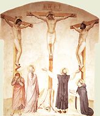
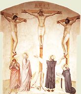

|  |
|---|
Textum Taurini 1952 editum
et automato translatum a Roberto Busa SJ in taenias magneticas
denuo recognovit Enrique Alarcón atque instruxit


|  |
|---|


[87451] Super Io., cap. 5 l. 1 Supra dominus egit de regeneratione spirituali; hic agit consequenter de beneficiis quae regeneratis spiritualiter conferuntur a Deo. Sed his qui carnaliter generantur tria conferuntur a parentibus carnalibus: scilicet vita, nutrimentum et doctrina sive disciplina; et haec tria a Christo etiam regenerati spiritualiter percipiunt. Primo quidem spiritualem vitam; secundo vero spirituale nutrimentum; tertio spiritualem doctrinam. Secundum hoc ergo de tribus hic agitur. Primo de collatione spiritualis vitae; secundo de collatione spiritualis cibi; et hoc infra VI, ibi post haec abiit Iesus etc.; tertio de spirituali doctrina, infra VII post haec ambulabat Iesus. Circa primum tria facit. Primo proponit signum visibile, in quo manifestatur virtus Christi factiva et reparativa vitae, secundum consuetudinem huius Evangelii, in quo semper doctrinae Christi adiungitur aliquod visibile factum, pertinens ad illud de quo est doctrina, ut sic ex visibilibus invisibilia innotescant. Secundo ponitur occasio doctrinae proponendae, ibi erat autem sabbatum et cetera. Tertio ponitur ipsa doctrina, ibi respondit itaque Iesus: amen, amen dico vobis et cetera. Circa primum tria facit. Primo describitur locus miraculi perpetrati; secundo infirmitas, ibi erat autem ibi homo etc.; tertio restitutio sanitatis, ibi dixit ei Iesus: surge, tolle grabatum tuum, et ambula. Locus autem miraculi describitur dupliciter, scilicet generalis et specialis. Generalis locus est Ierosolyma; et ideo dicit: post haec, idest post miraculum in Galilaea factum, erat dies festus Iudaeorum; scilicet Pentecostes, secundum Chrysostomum: nam supra fit mentio de festo Paschae, quando ierat in Ierusalem. Nunc ergo in sequenti festo Pentecostes, ascendit Iesus Ierosolymam, iterato: nam, sicut legitur Ex. XXIII, 17, mandatum erat a domino, ut omne masculinum generis Iudaeorum tribus vicibus in anno, scilicet in die festo Paschae, Pentecostes, Scenopegiae, in templo praesentaretur. Et in istis festis dominus in Ierusalem ascendit propter duo: scilicet ne videretur legi fore contrarius, sicut ipse dixerat, Matth. c. V, 17: non veni legem solvere, sed adimplere: et ut multitudinem populi illuc concurrentis in diebus festis ad Deum per signa et doctrinam trahat, secundum illud Ps. CVIII, v. 30: in medio multorum laudabo eum: et alibi annuntiabo iustitiam tuam in Ecclesia magna. Unde et ipse dicit, infra XVIII, 20: ego palam locutus sum mundo. Locus autem specialis miraculi fuit probatica piscina; et ideo dicit: est Ierosolymis probatica piscina etc., quae quidem describitur ex quatuor, scilicet ex nomine, ex dispositione, ex inhabitatione, et ex virtute. Ex nomine quidem cum dicit probatica piscina: probaton enim Graece ovis dicitur. Probatica ergo piscina, quasi oviaria, vel pecuaria dicitur, ex eo quod sacerdotes cadavera bestiarum, et praecipue ovium, quae ut plurimum in sacrificiis offerebantur, ibi abluebant: et ideo Hebraice cognominabatur Bethsaida, idest domus ovium. Erat enim prope templum ex aquis pluvialibus collecta. Mystice autem, secundum Chrysostomum, haec piscina Baptismum praefigurabat: nam dominus volens gratiam baptismalem in diversis praefigurare, primo quidem dedit aquam expurgantem corporis sordes, quae erant ex tactu immundorum secundum legem, de qua habetur Num. XIX. Secundo dedit virtutem huic piscinae quae repraesentat expressius quam aqua illa virtutem Baptismi, non solum ab immunditiis carnis sanando, sed etiam ab infirmitatibus corporis salvando: nam quanto figurae fuerunt propinquiores veritati, tanto expressiores erant. Signabat ergo virtutem Baptismi: quia sicut aqua illa per hoc quod lavabat corpora, habebat virtutem ex Angelo, non natura propria, infirmitatem sanandi, ita aqua Baptismi habet virtutem sanandi et abluendi animam a peccatis; Apoc. I, 5: dilexit nos, et lavit nos a peccatis nostris. Et inde est quod passio Christi per sacrificia veteris legis praefigurata, in Baptismo repraesentatur; Rom. VI, 3: quicumque baptizati estis in Christo Iesu, in morte ipsius baptizati estis et cetera. Secundum Augustinum vero, aqua illius piscinae significabat statum populi Iudaeorum, secundum illud Apoc. XVII, 15: aquae multae, populi multi. Nam populus gentium non erat inclusus sub limite divinae legis, sed unusquisque ambulabat secundum vanitatem cordis sui, secundum illud Eph. IV, 17. Populus vero Iudaeorum conclusus erat sub cultu unius Dei, secundum illud Gal. III, 23: conclusi in eam fidem quae revelanda erat. Et ideo iste populus significabatur per aquam in piscina conclusam. Et dicitur probatica, quia ipsi erant speciales oves Dei, secundum illud Ps. XCIV, 7: nos autem populus eius, et oves pascuae eius. Ex dispositione autem describitur, quia erat quinque porticus habens, scilicet per circuitum, ut multi sacerdotes absque impedimento commode starent ad lavandum cadavera bestiarum. Per hos quinque porticus mystice significantur, secundum Chrysostomum, quinque vulnera corporis Christi, de quibus dicitur infra XX, 27: mitte manum tuam in latus meum, et noli esse incredulus, sed fidelis. Secundum Augustinum vero, quinque libri Moysi. Ex inhabitatione autem describitur, quia in his, scilicet porticibus, iacebat multitudo magna languentium, caecorum, claudorum, aridorum et cetera. Cuius litteralis ratio est propter concursum omnium infirmorum ad virtutem aquae: quae quia continue non sanabat, nec multos simul, oportebat quod multi illic expectantes morarentur. Per hoc autem mystice significatur, secundum Augustinum, quod lex non poterat peccata sanare, secundum illud Hebr. X, 4: impossibile est per sanguinem hircorum aut taurorum peccata purgari. Sed ostendebat ea tantum, secundum illud Rom. III, 20: per legem enim cognitio peccati. Et ideo iacebant in ea infirmi diversis infirmitatibus, curari non valentes. Quae quidem describuntur quantum ad quatuor. Primo quidem quantum ad situm, quia iacebant prostrati, scilicet per peccata inhaerendo terrenis: qui enim iacet, ex toto inhaeret terrae; Matth. IX, 36: misertus est eorum, quia erant vexati et iacentes, quasi oves non habentes pastorem. Iusti autem non iacent, sed recti ad caelestia stant; Ps. XIX, 9: ipsi, scilicet peccatores, obligati sunt, et ceciderunt; nos autem, scilicet iusti surreximus, et erecti sumus. Secundo quantum ad numerum quia multi, unde dicit: multitudo magna; Eccle. I, 15: perversi difficile corriguntur, et stultorum infinitus est numerus. Et Matth. VII, 13: lata est via quae ducit ad perditionem, et multi incedunt per eam. Tertio quantum ad dispositionem seu habitum infirmorum. Et ponit quatuor quae homo per peccatum incurrit. Primo enim homo ex hoc quod subiicitur passionibus peccatorum ei praedominantibus, efficitur languidus: et quantum ad hoc dicit languentium. Unde et a Tullio passiones animae, puta irae et concupiscentiae, et huiusmodi, quaedam aegritudines animae dicuntur. Unde Ps. VI, 3, dicebat: miserere mei, domine quoniam infirmus sum. Secundo vero ex dominio passionum et victoria in homine excaecatur ratio per consensum: et quantum ad hoc dicit caecorum, scilicet per peccata, secundum illud Sap. II, v. 21: excaecavit eos malitia eorum; Ps. LVII, v. 9: supercecidit ignis, scilicet irae et concupiscentiae, et non viderunt solem. Tertio, homo languens et caecus efficitur instabilis in suis operibus, et est quasi claudus; unde dicitur Prov. XI, 18: impius facit opus instabile. Et quantum ad hoc dicit claudorum; III Reg. XVIII, 21: usquequo claudicatis in duas partes? Quarto homo sic languidus, caecus intellectu, claudus in effectu, efficitur aridus in affectu, inquantum exsiccatur in eo omnis pinguedo devotionis, quam petebat Psalmus LXII, 6, dicens: sicut adipe et pinguedine repleatur anima mea. Et quantum ad hoc dicit aridorum; Ps. XXI, 16: aruit tamquam testa virtus mea. Sed sunt aliqui sic affecti languore peccati, qui non expectant aquae motum, in peccatis suis requiescentes, secundum illud Sap. XIV, 22: in magno viventes inscientiae bello, tot et tanta mala pacem appellant. De quibus dicitur Prov. II, 14: laetantur cum male fecerint, et exultant in rebus pessimis. Cuius ratio est, quia non abhorrent peccata; nec peccant ex ignorantia, seu infirmitate, sed ex certa malitia. Isti autem, utpote non ex malitia peccantes, non quiescebant in peccatis sed per desiderium expectabant aquae motum. Unde dicit et expectantium; Iob XIV, 14: cunctis diebus quibus nunc milito, expecto donec veniat immutatio mea. Sic et illi qui erant in veteri testamento expectabant Christum, secundum illud Gen., penult., 18: salutare tuum expectabo, domine. Ex virtute vero describitur piscina, quia sanat ab omni infirmitate corporali, virtute Angeli descendentis; et ideo dicit Angelus autem domini secundum tempus descendebat in piscinam. Et quidem virtus piscinae in aliquo concordat cum Baptismo, et in aliquo differt. Concordat quidem in duobus. Primo quidem in occultatione virtutis: nam virtus aquae huius piscinae non erat ex natura sua, alias semper sanasset, sed ex aliqua virtute occulta, scilicet ex Angelo; unde dicitur, quod Angelus domini secundum tempus descendebat in piscinam. Et similiter aqua Baptismi, ex eo quod aqua non habet virtutem purgativam animarum, sed ex occulta virtute spiritus sancti, secundum illud supra III, 5: nisi quis renatus fuerit ex aqua et spiritu sancto, non potest introire in regnum Dei. Secundo concordat in effectu, quia sicut aqua Baptismi sanat, ita et ista piscina sanabat: et ideo dicit, quod qui prior descendisset, sanus fiebat. Ideo autem virtutem sanandi corpora aquae istius piscinae Deus contulit, ut homines abluendo, per salutem corporalem assuescerent quaerere spiritualem. Differt autem quantum ad tria. Primo quantum ad id cuius virtute hoc fiebat: quia aqua piscinae conferebat sanitatem virtute Angeli; aqua vero Baptismi virtute increata, non solum spiritus sancti, sed etiam Trinitatis. Unde etiam Matth. III, 16 s. super dominum baptizatum tota Trinitas affuit: pater in voce, filius in persona, spiritus sanctus in columbae specie. Et inde est quod in nostro Baptismo fit invocatio Trinitatis. Secundo differt quantum ad efficaciam: quia aqua piscinae non habuit virtutem sanativam continue, sed secundum tempus, idest determinato tempore; aqua vero Baptismi continuam abluendi virtutem habet, secundum illud Zach. XIII, 1: erit fons patens domui Iacob, et habitantibus Ierusalem, in ablutionem peccatoris et menstruatae. Tertio quantum ad multitudinem sanandorum: quia ad motum aquae illius piscinae, sanabatur tantum unus; sed ad motum aquae Baptismi sanantur omnes. Nec mirum, quia virtus illius aquae, cum sit creata, finita est, et finitum habet effectum; in hac vero aqua virtus est infinita ad infinitas animas, si essent, abluendas; Ez. XXXVI, 25: effundam super vos aquam mundam, et mundabimini ab omnibus inquinamentis vestris. Secundum vero Augustinum, per Angelum istum intelligitur Christus, secundum illud Is. IX, 6, secundum aliam litteram: vocabitur magni consilii Angelus. Sicut ille Angelus secundum tempus descendebat in piscinam, ita et Christus secundum determinatum tempus a patre descendit in mundum; Is. XIV, v. 1: prope est ut veniat tempus eius, et dies eius non elongabuntur; Gal. IV, 4: at ubi venit plenitudo temporis, misit Deus filium suum, factum ex muliere, factum sub lege. Item sicut ille Angelus non videbatur nisi motu aquae, ita etiam Christus secundum divinitatem non cognoscebatur: quia si cognovissent, numquam dominum gloriae crucifixissent: I Cor. II, 8. Nam Is. XLV, 15, dicitur: vere tu es Deus absconditus. Et ideo videbatur aqua turbata sed a quo turbaretur non videbatur, quia infirmitatem Christi videntes, divinitatem eius non cognoscebant. Et sicut ille qui descendebat in piscinam sanus fiebat; ita et qui humiliter credit in Deum, eius passione sanatur; Rom. III, 24: iustificati per fidem per redemptionem quae est in Christo, quem proposuit Deus propitiatorem per fidem in sanguine ipsius. Sanabatur autem unus tantum, quia nullus sanari potest nisi in ecclesiastica unitate; Eph. IV, 5: unus Deus, una fides, unum Baptisma. Vae ergo illis qui oderunt unitatem, et partes sibi faciunt in hominibus. Consequenter cum dicit, erat autem quidam homo ibi triginta et octo annos in infirmitate habens, ponit infirmitatem, et primo ponitur diuturna infirmitas; secundo ostenditur causa diuturnae infirmitatis, ibi hunc cum vidisset ergo Iesus et cetera. Infirmitas diuturna erat, quia homo erat habens triginta octo annos in infirmitate sua. Quod satis pulchre introducitur: homo qui curari non poterat a piscina, curandus tamen a Christo; quia quos lex sanare non poterat, Christus perfecte sanat, secundum illud Rom. VIII, 3: nam quod impossibile erat legi in quo infirmabatur per carnem, mittens Deus filium suum in similitudinem carnis peccati, de peccato damnavit peccatum in carne, ut iustificatio legis impleretur in nobis. Eccli. XXXVI, 6: innova signa, et immuta mirabilia. Congruit autem iste numerus infirmitati, ad languorem pertinens magis quam ad sanitatem: nam, secundum Augustinum, quadragenarius numerus consecratur ad designandam perfectionem iustitiae, quae in observatione legis consistit. Lex autem in decem praeceptis data est, et praedicanda erat in quatuor partibus mundi, vel implenda per quatuor Evangelia, secundum illud Rom. X, v. 4: finis legis Christus. Quia ergo denarius per quatuor multiplicatus pervenit ad quadragenarium, recte perfecta iustitia designatur: subtractis ergo duobus a quadragenario numero efficiuntur triginta octo. Haec autem duo sunt duo praecepta caritatis, quibus impletur omnis perfecta iustitia. Et ideo homo iste languebat, quia de quadraginta, duo minus habebat, idest imperfectam iustitiam: quia, ut dicitur Matth. XXII, 40: in his duobus pendent lex et prophetae. Consequenter cum dicit hunc cum vidisset Iesus, exquiritur causa diuturnae infirmitatis. Et primo ponitur interrogatio domini; secundo responsio languidi, ibi respondit ei languidus. Dixit ergo: hunc, scilicet hominem, cum vidisset Iesus iacentem, non solum oculo corporis, sed etiam miserationis, qualiter videri petebat David dicens: respice in me, domine, et miserere mei. Et cognovisset quia multum tempus haberet, in infirmitate; quod est contra cor Christi, et infirmi, secundum illud Eccli. X, v. 11: languor prolixior gravat medicum. Dixit ei: vis sanus fieri? Non quasi ignorans, nam satis constare poterat quod sanus fieri volebat, sed ut excitet desiderium infirmi, et ut ostendat patientiam, qui tot annis expectavit eripi ab aegritudine, non desistens, et ex hoc cognoscatur dignior ad sanandum; Ps. XXX, 25: viriliter agite, et confortetur cor vestrum, omnes qui speratis in Deo. Excitat autem desiderium: quia stabilius tenetur quod cum desiderio percipitur et facilius acquiritur nobis; Matth. VII: pulsate, per desiderium, et aperietur vobis. Sed notandum, quod dominus a ceteris fidem requirit; Matth. IX, 28: creditis quod possum hoc facere vobis? Sed in isto nihil tale facit: quia illi quidem audierant aliqua de miraculis Iesu, iste autem nondum: et ideo fidem ab eo non requirit, nisi post factum miraculum. Responsio languidi ponitur cum dicit: domine, hominem non habeo. Et duo insinuat, quae causa erant diuturnae infirmitatis: scilicet paupertatem et debilitatem. Quia enim pauper erat, non poterat habere hominem qui mitteret eum in piscinam; unde dicit domine, hominem non habeo et cetera. Et forte, secundum Chrysostomum, opinabatur sibi Christum utilem fore ad mittendum eum in aquam. Quia vero debilis erat, et festinanter ire non poterat, praeveniebatur ab alio; unde dicit dum venio enim ego, alius ante me descendit. Et sic poterat dicere cum Iob VI, 13: ecce non est auxilium mihi in me. Per hoc significatur quod non erat aliquis homo purus qui humanum genus salvare posset, quia omnes peccaverunt, et egerunt gratia Dei, quousque veniret Christus Deus et homo, per quem sanaretur. Consequenter cum dicit surge, tolle grabatum tuum, ponitur restitutio sanitatis, seu perpetratio miraculi. Et primo ponitur mandatum domini; secundo obedientia hominis, ibi et statim sanus factus est homo et cetera. Praecipit autem dominus naturae, et voluntati hominis; haec enim duo sub potestate eius sunt. Naturae praecipit, cum dicit surge: non enim hoc voluntati praecipitur, quia hoc non erat in eius potestate, sed naturae, quam dominus praecipiendo immutavit, dando ei virtutem qua surgere posset. Voluntati vero duo praecipit, scilicet tolle grabatum tuum, et ambula. Et quidem, quantum ad litteram, haec duo praecepit, ut ostendat perfectam sanitatem homini restitutam. In omnibus enim miraculis, secundum optimum illius naturae, dominus perfectum opus fecit; Deut. XXXII, 4, dicitur: Dei perfecta sunt opera. Iste autem in duobus defecerat: scilicet in viribus propriis, se sustinere non valens, unde dominus eum iacentem invenit; et in subsidio aliorum, unde dicebat hominem non habeo. Ut ergo perfecta sanitas innotesceret, ei qui se sustinere non valebat, praecipit ut lectum suum tollat; et ei qui ambulare non poterat, praecepit ut ambulet. Nihilominus tamen haec tria in iustificatione dominus praecipit. Primo quod surgat recedendo a peccato; Eph. V, 14: surge qui dormis, et exurge a mortuis. Secundo praecipitur tolle grabatum, satisfaciendo de commissis. Per grabatum enim, in quo homo requiescit, significatur peccatum. Tollit ergo homo grabatum suum, quando fert onus poenitentiae sibi pro peccato impositum; Mich. c. VII, 9: iram domini portabo, quoniam peccavi ei. Tertio ut ambulet proficiendo in bono, secundum illud Ps. LXXXIII, 8: ibunt de virtute in virtutem. Secundum Augustinum, duo deficiebant isti languido, scilicet praecepta geminae caritatis: et ideo voluntati, quae caritate perficitur, duo mandat, scilicet tollere grabatum, et ambulare. Primum pertinet ad dilectionem proximi, quae prior est ordine faciendi; secundum ad dilectionem Dei, quae prior est ordine praecipiendi. Dicit ergo quantum ad primum tolle grabatum tuum, quasi dicat: quando infirmus es, proximus tuus sustinet te, et patienter fovet ut grabatus infirmum; Rom. XV, 1: debemus nos firmiores, imbecillitates infirmorum sustinere, et non nobis ipsis placere. Quando ergo sanus factus es, tolle grabatum tuum, idest, sustine et supporta proximum tuum, qui te infirmum portabat; Gal. VI, 2: alter alterius onera portate. Quantum vero ad secundum, dicit ambula, appropinquando ad Deum. Unde in Ps. LXXXIII, v. 8, dicitur: ibunt de virtute in virtutem; et sequitur: videbitur Deus deorum in Sion; infra XII, 35: ambulate dum lucem habetis. Consequenter cum dicit et statim sanus factus est homo ille, ponitur obedientia: et primo vere quia statim factus est homo sanus. Nec mirum, quia ipse est verbum per quod caelum et terra facta sunt; Ps. CXLVIII, 5: dixit, et facta sunt. Et alibi: verbo domini caeli firmati sunt. Secundo voluntas: et primo, quia sustulit grabatum suum; secundo, quia ambulabat; Ex. XXIV, 7: omnia quaecumque praecepit dominus faciemus, et erimus obedientes.
[87452] Super Io., cap. 5 l. 2 Posito miraculo visibili, per quod ostenditur virtus Christi ad reparandam vitam spiritualem, hic ponitur occasio doctrinae Christi; quae quidem occasio sumitur ex persecutione Iudaeorum contra Christum mota. Cuius quidem persecutionis duplex causa fuit ex parte Iudaeorum invidentium Christo. Prima quidem operatio pietatis; secunda vero doctrina veritatis, ibi Iesus autem respondit eis: pater meus usque modo operatur et cetera. Circa primum tria facit. Primo praemittitur occasio persecutionis; secundo ponitur calumnia illata contra curatum, ibi dicebant ergo Iudaei illi qui sanatus fuerat etc.; tertio ponitur calumnia illata contra Christum, ibi interrogaverunt eum: quis est ille homo? et cetera. Occasio autem persecutionis inductae contra Christum sumitur ex eo quod in sabbato curavit; et ideo dicit Evangelista erat autem sabbatum in die illo, quando miraculum fecit Iesus, quando grabatum tollere iussit. Assignatur autem triplex ratio quare dominus in sabbato operari incepit. Una ab Ambrosio super Lucam, Christus enim ad hoc venit, ut opus creationis, scilicet hominem, deformatum repararet. Inde autem incipere debebat, ubi actor in creationis opus consummatum creaverat: hoc autem fuit in die sabbati, ut dicitur Gen. I; et ideo, ut Christus ostenderet se reparatorem totius creaturae, incepit in sabbato. Alia ratio est, quia dies sabbati celebratur a Iudaeis in memoriam primae creationis. Christus autem venit, ut quasi novam creaturam faceret, secundum illud Gal. ult., 15: in Christo Iesu neque circumcisio, neque praeputium aliquid valet; sed nova creatura, per gratiam, quae fit per spiritum sanctum, secundum illud Ps. CIII, 30: emittes spiritum tuum, et creabuntur, et renovabis faciem terrae. Volens ergo Christus ostendere, per eum recreationem fieri, in sabbato operatur; Iac. I, 18: ut simus initium aliquod creaturae. Tertia ratio est, ut ostenderet se facturum quod lex facere non poterat; Rom. VIII, 3: nam quod impossibile erat legi, in quo infirmabatur per carnem, misit Deus filium suum in similitudinem carnis peccati. Et infra ut iustificatio legis impleretur in nobis. Iudaei autem nihil operabantur in sabbato, in figura quod quaedam quae erant sabbati, consummanda erant, quae per legem fieri non poterant. Et hoc patet in quatuor, quae Deus erga diem sabbati ordinavit. Nam diem sabbati sanctificavit, diem sabbati benedixit, in eo opera sua consummavit, et in eo requievit. Quae quidem lex facere non potuit, nam sanctificare non poterat. Unde Ps. XI, 1, dicebat: salvum me fac, domine, quoniam defecit sanctus. Neque etiam benedicere; quinimmo qui sunt ex operibus legis, sub maledicto sunt, ut dicitur Gal. III, 10. Nec consummare et perficere: quia neminem ad perfectum adduxit lex: Hebr. VII, 19. Nec etiam perfectam quietem praestare: quia, ut dicitur Hebr. IV, 8: nam si eis Iesus requiem praestitisset, numquam de alia loqueretur. Haec ergo quae lex facere non potuit, Christus fecit: ipsum enim populum sanctificavit per passionem. Heb. XIII, 12: Iesus ut per suum sanguinem sanctificaret populum, extra portam passus est. Ipse benedixit per gratiae infusionem; Ephes. I, 3: benedictus Deus pater domini nostri Iesu Christi, qui benedixit nos in omni benedictione spirituali in caelestibus in Christo. Ipse consummavit per perfectae iustitiae instructionem; Matth. V, v. 48: estote perfecti, sicut et pater caelestis perfectus est. Ipse introduxit in veram requiem; Hebr. IV, 3: nos qui credimus, ingrediemur in requiem, quemadmodum dixit: sicut iuravi in ira mea, si introibunt in requiem meam. Ipsi ergo competit in die sabbati operari, qui, quae ad sabbatum pertinent, perficere potest, a quibus lex impotens quiescebat. Consequenter ponit calumniam illatam contra curatum, cum dicit: dicebant ergo Iudaei illi qui sanatus fuerat et cetera. Et primo ponitur calumniae contra curatum illatio; secundo subditur curati excusatio, ibi respondit eis: qui me sanum fecit et cetera. Calumniam autem inferunt contra istum de hoc quod in sabbato grabatum portat, sed non de curatione; unde dicunt sabbatum est, non licet tibi tollere grabatum tuum. Cuius ratio multiplex potest assignari. Una, quia Iudaei frequenter Christo de curatione in die sabbati calumniam inferentes, confutati erant a Christo, per hoc quod ipsi etiam iumenta de puteo in die sabbati eruebant et salvabant, ut habetur Lc. XIV, 15. Et ideo de curatione tamquam de re utili et necessaria tacent; de portatione vero lecti, quae non necessaria videbatur, calumniantur; quasi dicant: si sanitas non erat differenda, quid erat necessarium lectum portare, seu portari praecipere? Alia ratio est, quia dominus dixerat, contra eos concludens, quod licet sabbato benefacere. Et ideo, quia curari non est benefacere sed bene pati, curatum potius quam curantem calumniantur. Tertia ratio est, quia hoc in lege videtur prohibitum esse Iudaeis, ne aliquid in die sabbati operentur; specialiter tamen portatio onerum in die sabbati prohibetur. Ier. XVII, 21: ne portetis onera in die sabbati. Et ideo specialiter calumniati sunt portationem in die sabbati, utpote dicto prophetae contrariam. Sed hoc tamen mandatum prophetae mysticum est: nam per onera non portanda intendebat eos inducere ut in die sabbati requiescerent ab oneribus peccatorum; de quibus dicitur in Ps. XXXVII, 5: iniquitates meae sicut onus grave gravatae sunt super me. Unde, quia iam erat tempus solvendi figuras occultas, mandat Christus isti grabatum tollere, idest proximum in infirmitate sustentare, secundum illud Gal. VI, 2: alter alterius onera portate, et sic adimplebitis legem Christi. Consequenter ponitur excusatio curati, cum subditur respondit eis: qui me sanum fecit, ille mihi dixit. Et quidem prudenter se excusat: numquam enim adeo bene probatur doctrina esse divinitus, sicut per ostensionem miraculorum, quae nonnisi divinitus fieri possunt. Mc. ult., 20: illi autem profecti praedicaverunt ubique, domino cooperante, et sermonem confirmante, sequentibus signis. Et ideo iste, auctorem sanitatis suae calumniantibus, obiiciebat dicens qui me sanum fecit, ille mihi dixit; quasi dicat: vos dicitis prohibitum esse ne onus portetur in sabbato, et hoc auctoritate divina; sed mihi eadem auctoritate est impositum ut tollam grabatum: nam ille, qui me salvum fecit, et per sanitatem restitutam se divinam virtutem habere ostendit, mihi dixit: tolle grabatum tuum, et ambula. Et ideo mandatis eius qui tantae est virtutis, et qui mihi tale beneficium contulit, merito teneor obedire. Ps. CXVIII, 93: in aeternum non obliviscar iustificationes tuas, quia in ipsis vivificasti me. Consequenter dicit interrogaverunt ergo eum. Quia curatum hominem calumniari non poterant, Christi curationem calumniari nituntur: per hunc enim se excusaverat homo ille. Et quia eum determinate quis esset, non indicaverat, maligne interrogabant ab eo qui esset. Et ideo circa hoc primo agitur de Christi inquisitione; secundo de eius inventione, ibi postea invenit eum Iesus; tertio de eius persecutione, ibi propterea persequebantur Iudaei Iesum. Circa primum tria ponuntur: scilicet Iudaeorum inquisitio, curati ignorantia et ignorantiae causa. Quantum ad primum dicitur: interrogabant ergo eum Iudaei, scilicet non bona intentione, ut proficiant, sed maligno animo, ut persequantur et perdant. Infra VIII, 21: quaeretis me, et in peccato vestro moriemini. Et hanc eorum malitiam eorum verba manifestant. Cum enim dominus et sanari languidum, et grabatum tolli iusserit, primum divinae virtutis ostensivum et irrefragabile signum subticent; aliud quod contra legem videtur, replicant, dicentes quis est ille homo qui dixit tibi: tolle grabatum tuum et ambula? Eccli. XI, 33: bona in mala pervertens, insidiatur, et in electis imponit, scilicet imponere nititur maculam. Quantum ad secundum dicit qui autem sanus factus fuerat, nesciebat qui esset. Sanus iste significat fideles per gratiam Christi sanatos. Ephes. II, 8: gratia salvati estis. Qui quidem nesciunt Christum quis est, sed effectum tantum eius cognoscunt. II Cor. c. V, 6: quamdiu sumus in corpore, peregrinamur a domino: per fidem enim ambulamus, et non per speciem. Sed tunc cognoscemus Christum quis est, quando videbimus eum sicuti est: I Io. III, 2. Huius autem ignorantiae causam assignat quantum ad tria, cum dicit Iesus autem declinavit a turba constituta in loco. Quod quidem causam habet litteralem et mysticam. Litteralem quidem quantum ad duo. Primo ut daret nobis exemplum occultandi opera nostra bona et non quaerendi in eis hominum favorem, secundum illud Matth. VI, 1: attendite ne iustitiam vestram faciatis coram hominibus. Secundo ut declinemus et fugiamus oculos invidorum ab omnibus operibus nostris, ne ex hoc eorum invidia crescat; Eccli. VIII, 14: ne contra faciem stes contumeliosi, ne sedeat quasi insidiator ori tuo. Mysticam vero quantum ad duo. Primo, ut det intelligere quod Christus non de facili invenitur in hominum multitudine et in turbine curarum temporalium, sed in spirituali secreto. Osee II, 14: ducam eam in solitudinem, et ibi loquar ad cor eius. Nam verba sapientium audiuntur in silentio, ut dicitur Eccle. IX, 17. Secundo, ut insinuet quod Christus debebat declinare a Iudaeis ad gentes; Is. VIII, 17: abscondit faciem suam parumper a Iacob, idest subtraxit veritatis suae notitiam a populo Iudaeorum. Consequenter agitur de inventione Christi, cum dicit postea invenit eum Iesus in templo. Et primo dicit quod invenitur; secundo insinuat quod inventus docet; tertio quod post doctrinam manifestatur. Quantum ad inventionem duo ponit, scilicet modum inveniendi, et locum. Modus quidem est mirabilis, quia non invenitur nisi inveniat, unde dicit postea, scilicet quae dicta sunt, invenit eum Iesus: nam homo sua virtute Christum invenire non potest, nisi ei se Christus praesentet. Unde etiam Ps. CXVIII, 176 dicebat: require servum tuum. Sap. VI, 14: praeoccupat eos qui se concupiscunt. Locus autem in quo invenitur Christus est venerabilis, quia in templo, secundum illud Ps. X, 5: dominus in templo sancto suo. Nam et mater eius in templo eum invenit, Lc. II, 46 et hoc quia in his quae patris sui sunt, oportebat eum esse. In quo datur nobis intelligi quod curatus iste non ad vanitatem, sed ad religionis studium conversus, templum frequentans, in ipso Christum cognoscit: quia si ad conditoris cognitionem venire volumus, fugienda est turba pravorum affectuum, et declinanda sunt malorum conventicula, et fugiendum est ad templum cordis nostri, quod Deus invisere et habitare dignatur. Consequenter inventus docet; unde et dixit illi: ecce sanus factus es, iam noli peccare. Ubi primo commemorat impensum beneficium; secundo proponit sanum consilium; tertio ostendit imminens periculum. Sed beneficium est admirabile, quia subita restitutio sanitatis. Unde dicitur ecce iam sanus factus es. Et ideo semper oportet in memoria teneri, secundum illud Is. LXIII, v. 7: miserationum domini recordabor. Consilium vero utile, quia iam amplius noli peccare; Eccli. XXI, 1: fili, peccasti, ne adiicias iterum. Quare dominus isti paralytico et aliis quibusdam ab eo curatis mentionem facit de peccatis, et non aliis? Ideo scilicet ut ostendat per hoc, infirmitates aliquibus, ex peccatis prioribus provenire, secundum illud I Cor. XI, v. 30: ideo multi imbecilles et infirmi, et dormiunt multi. Per quod etiam se esse Deum ostendit, peccata et occulta cordium manifestans. Prov. XV, 11: Infernus et perditio coram illo: quanto magis corda filiorum hominum? Istis ergo solis mentionem de peccatis facit et non aliis ab eo curatis, quia non omnes infirmitates propter peccata priora proveniunt; sed quaedam ex naturali dispositione, quaedam propter probationem, sicut in Iob. Vel de istis tantum mentionem fecit, quia magis praeparati erant ad correctionem. Prov. c. IX, 8: noli arguere derisorem, ne oderit te: argue sapientem, et diliget te. Vel in istis, omnibus aliis hoc mandavit. Periculum autem imminens erat terribile, unde dicit ne deterius tibi aliquid contingat. Quod quidem dupliciter intelligi potest, secundum duo quae in isto praecesserunt. Primo enim punitus fuit per prolixum morbum; secundo consecutus fuit magnum beneficium. Et ideo ad utrumque referri potest quod dicitur. Ad primum quidem: quia cum aliquis pro peccato punitur et ex ipsa poena a peccato non retrahitur, iustum est ut gravius puniatur. Et ideo dicit noli amplius peccare, quia si peccaveris deterius tibi continget. Ier. c. II, 30: frustra percussi filios vestros: disciplinam non receperunt. Ad secundum vero: quia qui post beneficia recepta ad peccata prolabitur, gravioris supplicii reus efficitur propter ingratitudinem, secundum illud II Pet. II, 20: melius erat eis viam veritatis non agnoscere, quam post agnitionem retrorsum converti. Similiter etiam quia postquam homo ad peccatum semel redierit, facilius peccat; secundum illud Mt. XII, v. 45: fiunt novissima hominis illius peiora prioribus. Ier. II, 20: a saeculo fregisti iugum, rupisti vinculum, dixisti: non serviam. Consequenter ponitur inventi manifestatio, cum subditur abiit ille homo et annuntiavit et cetera. Et secundum quosdam posset intelligi, ut Chrysostomus dicit, quod ex malitia manifestasset eum; sed hoc non videtur probabile, scilicet quod post tantum beneficium ita ingratus esset. Nuntiavit ergo Iudaeis, quia Iesus esset qui fecit eum sanum, ut manifestaret Christi virtutem ad sanandum. Ps. LXV, 16: venite, et narrabo (...) quanta fecit dominus animae meae. Et hoc patet, quia illi interrogaverunt eum, quis iusserit grabatum tollere. Iste autem annuntiavit eis quod Iesus fecit eum sanum. Consequenter cum dicit propterea persequebantur Iudaei Iesum, ponitur persecutio contra Christum, quae est propter quoddam opus pietatis in sabbato exhibitum; unde dicit propterea persequebantur Iudaei Iesum, quia haec faciebat in sabbato. Ps. CXVIII, 161: principes persecuti sunt me gratis. Consequenter cum dicit Iesus autem respondit eis etc., ponitur secunda causa persecutionis, quae sumitur ex doctrina. Et primo ponitur doctrina veritatis; secundo persecutio Iudaicae pravitatis, ibi propterea ergo magis quaerebant eum Iudaei interficere. Doctrinam autem veritatis proponit dominus, excusando se de solutione sabbati. Sed notandum est, quod dominus de huius solutione aliquando quidem excusavit se, aliquando discipulos suos. Et discipulos quidem, quia homines puri erant, excusavit per similitudinem hominum, scilicet per exemplum sacerdotum, qui operabantur in templo in die sabbati, et sabbatum non solvebant. Et David, qui sub Achimelech sacerdote in die sabbati a facie Saulis fugiens, panes propositionis accepit de templo, ut habetur I Reg. XXI, v. 1 ss. Se vero, quia homo erat et Deus, aliquando per similitudinem hominum excusavit a solutione sabbati. Lc. XIV, 5: quis vestrum, si ceciderit bos aut asinus suus in puteum, non continuo extrahet eum in die sabbati? Aliquando vero, et praecipue in hoc loco, excusat se per similitudinem Dei, dicens pater meus usque modo operatur, et ego operor; quasi dicat: nolite putare quod in sabbato ita requieverit pater meus, ut ex illo non operetur; sed sicut ipse et nunc sine labore operatur, ita et ego operor. In quo excludit falsum intellectum Iudaeorum, qui volentes conformari Deo, nihil in die sabbati operantur, ac si Deus ipso die omnino destiterit operari. Et quidem licet in sabbato requieverit a novis creaturis condendis, nihilominus tamen semper et continue usque modo operatur, creaturas in esse conservando. Unde et signanter verbo requietionis Moyses est usus post opera Dei, a quibus condendis requievit, ut signaret spiritualem requiem, quam Deus exemplo quietis suae fidelibus postea qui bona fecerint opera, arcana significatione pollicebatur. Unde dici potest, illud mandatum in umbra futuri fuisse praeceptum. Signanter autem dicit usque nunc operatur; non autem operatus est, ut designet continuationem divini operis. Nam possent imaginari Deum esse causam mundi, sicut artifex est causa domus, quantum ad fieri tantum: ut sicut domus manet, etiam cessante operatione artificis, ita et mundus subsistere posset, influxu divino cessante. Sed, secundum Augustinum, Deus ita est causa omnium creaturarum quod sit etiam causa subsistendi; quia si eius potentia ad momentum cessaret, simul et illarum cessarent species omnes, quas natura continet: sicut si dicerem, quod aer tamdiu illuminatur quamdiu lumen solis manet in ipso. Cuius quidem ratio est, quia ea quae causam habent, quantum ad fieri solum, cessante causa subsistere possunt; ea vero quae non solum fieri, sed etiam subsistentiae causam habent, continua conservatione causae indigent. Excludit etiam per hoc quod dicit pater meus usque modo operatur, opinionem quorumdam dicentium, quod Deus mediantibus secundis causis res producit; quod est contra illud Is. XXVI, 12: omnia opera nostra operatus es in nobis, domine. Sicut ergo pater meus, in principio instituendo naturam, usque modo operatur, eadem operatione ipsam continendo et conservando, et ego operor, quia sum patris verbum, per quod omnia operatur; Gen. I, 3: dixit Deus: fiat lux. Unde sicut primam institutionem rerum per verbum operatus est, ita et ipsarum conservationem. Et sic si ipse usque modo operatur, et ego operor, quia sum verbum patris, per quod omnia fiunt et conservantur. Consequenter cum dicit propterea ergo magis quaerebant eum Iudaei interficere, ponitur persecutio ex doctrina proveniens: quia propter ipsam doctrinam Iudaei magis, idest avidiori animo, ferventiori zelo, quaerebant eum interficere. Duo enim crimina in lege morte punita fuerunt: scilicet crimen solutionis sabbati, unde ille qui collegit ligna in sabbato lapidatus est, Num. XV, 32, et crimen blasphemiae, unde dicitur Lev. XXIV, 14: educ blasphemum extra castra (...) et lapidet eum omnis multitudo filiorum Israel. Blasphemiam autem isti reputabant quod homo diceret se esse Deum; infra X, 33: de bono opere non lapidamus te, sed de blasphemia, quia homo cum sis, facis teipsum Deum. Et haec duo crimina imponebant Christo: unum scilicet quia solvebat sabbatum, aliud quia dicebat se aequalem Deo. Unde dicit, quod ideo quaerebant eum occidere, quia non solum solvebat sabbatum, sed etiam patrem suum dicebat Deum. Sed quia etiam alii iusti Deum patrem suum dicunt: Ier. III, 19: patrem vocabis me, ideo non solum dicunt quod patrem suum dicebat Deum, sed addunt quod pertinet ad blasphemiam aequalem se faciens Deo, quod ex hoc colligunt quod dixit: pater meus operatur, et ego operor. Deum patrem suum dicit, ut det intelligere quod pater eius est per naturam, aliorum autem per adoptionem: secundum quem modum loquitur infra XX, 17: vado ad patrem meum, scilicet per naturam, et patrem vestrum, scilicet per gratiam. Item ad similitudinem eius se operari dicit, solvens per hoc calumniam Iudaeorum de solutione sabbati: quae non esset conveniens excusatio, nisi aequalis auctoritatis esset in operando cum Deo. Et ideo dicunt quod facit se aequalem Deo. Et quidem magna est Arianorum caecitas, qui in verbis domini non possunt intelligere quod Iudaei intelligunt, dicentes Christum Deo patre minorem esse. Sed Ariani dicunt, quod Christus non fecit se aequalem Deo, sed Iudaei hoc suspicabantur. Sed per ea quae dicta sunt in ipso textu, aliter etiam manifestum est. Nam Evangelista dicit quod Iudaei persequebantur Christum, quia solvebat sabbatum, et quia dicebat patrem suum Deum, et quia faciebat se aequalem Deo. Aut ergo Christus est mendax, aut est aequalis Deo. Sed si est aequalis Deo, ergo Christus Deus est per naturam. Dicit autem Evangelista se aequalem faciens Deo, non quod ipse aequalem se Deo faceret, quia per aeternam generationem aequalis erat Deo; sed secundum intentionem Iudaeorum loquens, qui non credentes Christum esse filium Dei per naturam, intellexerunt ex verbis eius quod se diceret Dei filium, quasi volens se aequalem Deo facere, cum tamen hoc eum esse non crederent; infra c. X, 33: tu homo cum sis, facis teipsum Deum; idest, dicis te esse Deum: quod interpretatur ac si tu ipse facias teipsum Deum.
[87453] Super Io., cap. 5 l. 3 Hic tradit doctrinam de potestate vivificativa. Et primo ponitur ipsa doctrina; secundo confirmatio eius, ibi si ego testimonium perhibeo de meipso, testimonium meum non est verum. Circa primum duo facit. Primo proponit doctrinam eius de potestate vivificativa in communi; secundo in speciali, ibi et maiora his demonstrabit ei opera. Circa primum tria facit. Primo insinuat potestatis suae originem; secundo ipsius potestatis magnitudinem, ibi quaecumque enim ille fecerit, haec et filius similiter facit. Tertio assignat utriusque rationem, ibi pater enim diligit filium. Considerandum autem circa primum, quod Ariani ex his verbis quae hic dominus dicit non potest filius a se facere quidquam etc., errorem suum confirmare nituntur, scilicet quod filius minor sit patre, quia, secundum quod Evangelista dixit, Iudaei persequebantur Christum, quia faciebat se aequalem Deo. Quod videns dominus, Iudaeos ex hoc moveri, volens hoc excludere, ut Ariani dicunt, talia verba subiunxit, ut se aequalem patri non esse monstraret, dicens: amen, amen dico vobis, non potest filius a se facere quidquam, nisi quod viderit patrem facientem; quasi dicat: non intelligatis me per hoc quod dixi pater meus operatur, et ego operor, sic operari quasi ego sim ei aequalis, quia nihil possum facere a meipso. Quia ergo filius non potest facere quidquam, nisi quod viderit patrem facientem, utique minor est patre, ut ipsi dicunt. Sed hic intellectus falsus est et erroneus: quia si filius non esset aequalis patri, tunc non esset filius idem cum patre, quod est contra illud, infra X, 30: ego et pater unum sumus. Nam aequalitas attenditur secundum magnitudinem, quae in divinis est ipsa essentia. Unde si esset patri inaequalis, differret ab eo secundum essentiam. Ad verum autem huius intellectum, sciendum est, quod in his quae in filio minorationem importare videntur, posset dici ab aliquibus haec de Christo dicta esse secundum naturam assumptam, sicut dicitur infra XIV, v. 28: pater maior me est. Unde secundum hoc vellent dicere, quod hoc quod dominus dicit non potest filius a se facere quidquam, intelligendum est de filio secundum naturam assumptam. Quod quidem stare non potest, quia secundum hoc oporteret dicere quod omnia quae filius Dei fecit in natura assumpta, pater ante eum fecisset; puta quod siccis pedibus super mare ambulasset, sicut Christus ambulavit, alias non diceretur nisi quod viderit patrem facientem. Sed si dicatur, quod quaecumque Christus in carne fecit, etiam Deus pater fecit, inquantum in eo pater operatur, secundum illud, infra XIV, 10: pater autem in me manens ipse facit opera; ut sit sensus: non potest filius a se facere quidquam, nisi quod viderit patrem facientem, in seipso, scilicet filio. Sed nec hoc stare potest, quia secundum hoc ea quae sequuntur, non possent ei adaptari, scilicet quaecumque ille fecerit, haec et filius similiter facit. Numquam enim secundum naturam assumptam filius creavit mundum, sicut pater creavit. Non ergo ad naturam assumptam referendum est quod dicitur. Secundum Augustinum autem, alius modus est intelligendi ea quae videntur in filio minorationem importare, licet non importent: ut scilicet referantur ad originem filii a patre. Quia licet filius sit aequalis patri per omnia, tamen hoc ipsum habet a patre per aeternam generationem; sed pater a nullo habet, cum sit ingenitus. Unde secundum hoc continuatur sic. Quid scandalizati estis, quia patrem meum dixi Deum, et quia aequalem me feci Deo? Amen, amen dico vobis, non potest filius a seipso facere quidquam; quasi dicat: ita sum aequalis patri, ut ab illo sim, non ille a me; et quidquid ego habeo ut faciam, est mihi a patre. Secundum hunc ergo modum in his verbis fit mentio de potestate filii, per hoc verbum potest, et de eius operatione per hoc verbum facere. Et ideo utrumque potest hic intelligi: ut scilicet ostendatur primo derivatio potestatis filii a patre; secundo vero ut ostendatur conformitas operationis filii ad operationem patris. Quantum ad primum, exponit Hilarius hoc modo. Supra dominus dixit se esse aequalem patri. Sed aliqui haeretici propter auctoritates Scripturae, quae dicunt unitatem et aequalitatem filii ad patrem, attribuunt filio quod sit ingenitus, sicut Sabelliani, dicentes filium esse idem cum patre in persona. Ne ergo hoc intelligas, dicit: non potest filius a se facere quidquam, nam potentia filii idem est quod natura eius. Ab eo ergo filius habet posse a quo habet esse; esse autem habet a patre, infra XVI, 28: exivi a patre, et veni in mundum: a quo etiam habet naturam, quia Deus est de Deo, ergo ab eo habet posse. Sic ergo hoc quod dicit: non potest filius facere quidquam, nisi quod patrem viderit facientem, tantum valet ac si dicatur: filius, sicut non habet esse nisi a patre, ita nec posse facere aliquid nisi a patre. In naturalibus enim ab eodem aliquid accipit posse operari a quo recipit esse, sicut ignis ab eo recipit quod possit ascendere sursum a quo recipit formam et esse. Nec tamen per hoc quod dicit non potest filius a se facere quidquam, importatur inaequalitas: quia hoc pertinet ad relationem; quaestio autem aequalitatis et inaequalitatis pertinet ad quantitatem. Per hoc autem quod dicit nisi quod viderit patrem facientem, posset alicui falsus intellectus subintrare, ut crederet filium hoc modo facere, quia vidit patrem facientem; scilicet, quod pater primo fecit, hoc viso, filius postea inceperit facere; ad modum duorum fabrorum, magistri scilicet et discipuli, qui arcam facit secundum modum quem viderit magistrum facere. Quod quidem non est verum de verbo; nam supra dicitur: omnia per ipsum facta sunt. Ergo pater non fecit aliquid, ita quod filius videret fieri, et addisceret. Sed hoc dictum est ut designetur communicatio paternitatis filio per generationem, quae convenienter designatur hoc verbo viderit, quia per visum et auditum in nos ab alio scientia transfunditur. Nam per visum quidem scientiam a rebus accipimus, per auditum vero a sermonibus. Filius autem non est aliud quam sapientia, secundum illud Eccli. XXIV, 5: ego ex ore altissimi prodii primogenita ante omnem creaturam. Et sic derivatio filii a patre nihil aliud est quam derivatio divinae sapientiae. Quia ergo visio designat derivationem cognitionis et sapientiae ab alio, recte per visionem generatio filii a patre designatur, ut sic nihil aliud sit filium videre patrem facientem, quam procedere intelligibili processione a patre operante. Potest autem et de huiusmodi, secundum Hilarium, alia ratio assignari; scilicet, ut per hoc quod dicit viderit, excludatur omnis imperfectio a generatione filii vel verbi; nam in generatione materiali illud quod generatur, paulatim per incrementa temporum ab imperfecto ad perfectum perducitur: non enim iam perfectum est aliquid quando generari incipit. Sed hoc in generatione aeterna locum non habet, cum sit generatio perfecti a perfecto. Et ideo dicit nisi quod viderit filius patrem facientem. Cum enim videre sit actus perfecti, manifestum est quod filius statim perfectus genitus est, tamquam statim videns, et non per incrementa temporum ad perfectum perducitur. Quantum vero ad secundum exponit Chrysostomus, scilicet ad ostendendum conformitatem patris ad filium, quantum ad operationem, hoc modo. Dico quod licet mihi operari in sabbato, quia et pater meus continue operatur, cui non possum operari contrarium; et hoc quia non potest filius a se facere quidquam et cetera. Tunc enim quis aliquid a se facit, cum in faciendo non se conformat alteri. Quicumque autem est ab alio, si discordat ab eo, peccat; infra VII, 18: qui a semetipso loquitur, gloriam propriam quaerit. Quicumque ergo existens ab alio, a semetipso operatur, peccat; filius autem est a patre: ergo si operatur a semetipso, peccat; quod est impossibile. Per hoc ergo quod dicit dominus, filius non potest a se facere quidquam etc., nihil aliud insinuat, quam quod filius non potest peccare. Quasi dicat: iniuste persequimini me de solutione sabbati, quia non possum peccare, quia non operor contraria patri meo. Utramque autem expositionem, scilicet Hilarii et Chrysostomi, facit Augustinus, licet in diversis locis. Consequenter cum dicit quaecumque enim ille fecerit, haec et filius similiter facit, ponitur magnitudo potestatis Christi et excludit in his tria circa potestatem suam: scilicet particularitatem, diversitatem et imperfectionem. Particularitatem: quia, cum sint diversa agentia in mundo, et agens primum universale virtutem habeat super omnia agentia, alia vero agentia, quae sunt ab ipso, tanto particularis virtutis sint, quanto sunt inferiora in ordine causalitatis, posset ex hoc aliquis credere, quod cum filius non sit a se, habeat potestatem particularem respectu aliquorum existentium, et non universalem respectu omnium, sicut habet pater. Et ideo hoc excludens dicit quaecumque enim ille, idest pater, fecerit, idest ad omnia ad quae se extendit potestas patris, extendit se etiam potestas filii. Supra I, 3: omnia per ipsum facta sunt. Diversitatem vero, quia aliquando unum, ab alio existens, potest quidem facere quaecumque ille a quo est facit, nihilominus tamen illa quae facit, non sunt eadem cum illis quae ille a quo est facit. Sicut si unus ignis existens ab alio, potest facere quaecumque alius facit, puta comburere, sed tamen alia comburit iste, alia ille, licet eadem sit combustio utriusque secundum speciem. Ne ergo intelligas sic operationem filii diversam esse ab operatione patris, dicit haec, idest non diversa, sed eadem. Imperfectionem vero, quia quandoque contingit aliquod unum et idem ex duobus agentibus fieri, sed ab uno quidem sicut a principali et perfecto, ab alio vero sicut ab instrumento et imperfecto; sed non similiter, quia aliter agit principale agens, et aliter instrumentum, quia instrumentum imperfecte agit, utpote in virtute alterius. Ne ergo sic intelligas filium facere quaecumque facit pater, addit similiter, idest, potestate qua pater facit, facit et filius; quia eadem virtus et eadem perfectio est in patre et filio; Prov. VIII, 30: cum eo eram cuncta componens. Consequenter cum dicit pater enim diligit filium, assignat rationem utriusque, scilicet originis et magnitudinis potestatis filii; quae quidem ratio assignatur ex dilectione patris, qui diligit filium; unde dicit: pater enim diligit filium. Sed ad sciendum quomodo dilectio patris ad filium sit ratio originis, seu communicationis potestatis filii, attendendum est, quod dupliciter aliquid diligitur. Cum enim bonum solum sit amabile, aliquod bonum potest se dupliciter ad amorem habere, scilicet vel ut causa amoris, vel ut ab amore causatum. In nobis autem bonum causat amorem; nam causa amoris nostri ad aliquem est bonitas eius. Non enim ideo bonus est, quia nos eum diligimus; sed ideo diligimus eum, quia bonus est: unde in nobis amor causatur a bono. Sed in Deo aliter est, quia ipse amor Dei est causa bonitatis in rebus dilectis: quia enim Deus diligit nos, ideo boni sumus, nam amare nihil est aliud quam velle bonum alicui. Cum ergo voluntas Dei sit causa rerum, quia omnia quaecumque voluit, dominus, fecit, ut dicit Ps. CXIII, 3, manifestum est quod amor Dei, causa est bonitatis in rebus. Unde Dionysius dicit, VI cap. de divinis nominibus, quod divinus amor non permisit eum sine germine esse. Ergo si consideremus originem filii, videamus utrum amor quo pater diligit filium, sit principium originis vel procedat ab ea. Amor autem in divinis dupliciter accipitur; scilicet essentialiter, secundum quod pater diligit et filius et spiritus sanctus; et notionaliter, seu personaliter, secundum quod spiritus sanctus procedit ut amor. Sed neutro horum modorum amor dictus, potest esse principium originis filii. Nam secundum quod accipitur essentialiter, sic importat actum voluntatis. Si ergo esset principium originis filii, sequeretur quod pater genuisset filium voluntate, non natura: quod est erroneum. Similiter etiam nec amor notionaliter sumptus, qua pertinet ad spiritum sanctum, quia tunc sequeretur quod spiritus sanctus esset principium filii: quod est erroneum; immo nullus haereticus hoc dixit. Licet enim amor notionaliter sumptus sit principium omnium donorum quae nobis donantur a Deo, non tamen est principium filii, sed potius ipse a patre filioque procedit. Sic ergo dicendum, quod ratio ista non sumitur ex dilectione ut ex principio, sed ut ex signo. Cum enim similitudo sit causa dilectionis (omne enim animal diligit simile sibi): ubi invenitur perfecta similitudo Dei, ibi invenitur etiam perfecta dilectio Dei. Perfecta autem similitudo patris in filio est secundum illud Coloss. I, 15: qui est imago invisibilis Dei; Hebr. I, 3: qui cum sit splendor, gloria et figura substantiae eius. Perfecte ergo filius a patre diligitur: et ideo quia perfecte diligit eum, signum est quod pater omnia ostenderit ei et communicaverit ei suam potestatem et naturam. Et de huius dilectione dicitur supra II, 35: pater diligit filium, et omnia dedit in manu eius. Et Matth. III, 17: hic est filius meus dilectus. Circa hoc autem quod sequitur et omnia demonstrat ei quae ipse facit, sciendum est, quod dupliciter potest aliquis alicui sua opera demonstrare. Vel quantum ad visum, sicut artifex ea quae facit demonstrat discipulo; vel quantum ad auditum, sicut quando verbo instruit eum. Quocumque ergo istorum modorum accipiatur demonstrat, sequi potest duplex inconveniens: quod tamen non est in ista demonstratione, qua pater demonstrat filio. Si enim pater dicatur demonstrare filio quantum ad visum, primo quidem sequitur in istis inferioribus quod prius operetur aliquid quod alteri demonstrat; deinde quod seorsum ab eo cui demonstrat. Sed pater non demonstrat filio ea quae prius facit, quia ipse filius dicit Prov. VIII, 22: dominus possedit me in initio viarum suarum, antequam quidquam faceret. Neque etiam ea quae seorsum a filio facit: quia pater omnia operatur per filium; supra I, 3: omnia per ipsum facta sunt. Si autem accipiatur demonstratio quantum ad auditum, duo videntur sequi: nam qui verbo docet, primo demonstrat ignoranti; deinde verbum est inter demonstrantem et cui fit demonstratio. Sed neutro modo pater demonstrat filio: non enim sicut ignoranti, cum filius sit sapientia patris, I Cor. I, 24: Christum Dei virtutem et Dei sapientiam; nec aliquo alio verbo medio, quia ipse filius est verbum patris, supra I: verbum erat apud Deum. Dicitur ergo pater omnia quae facit demonstrare filio, inquantum communicat ei notitiam omnium suorum operum: sic enim magister dicitur demonstrare discipulo, inquantum dat ei notitiam eorum quae facit. Unde, secundum Augustinum, demonstrare patrem filio, nihil aliud est quam patrem generare filium. Et filium videre quae pater facit, nihil aliud est quam filium esse et naturam a patre recipere. Potest tamen dici demonstratio illa similis visuali, inquantum ipse filius est splendor visionis paternae, ut dicitur Hebr. I, 3: nam pater videns se et intelligens, concipit filium, qui est conceptus huius visionis. Potest etiam esse similis ei quae fit per auditum, inquantum filius procedit a patre ut verbum. Ut si dicatur quod pater omnia demonstrat filio, inquantum producit ipsum ut splendorem, et conceptum suae sapientiae, et verbum. Hoc ergo quod dicit demonstrat, refertur ad illud quod supra dixit: non potest filius a se facere quidquam, nisi quod viderit patrem facientem. Hoc vero quod dicit omnia, refertur ad illud quod dixit: quaecumque enim ille fecerit, haec similiter et filius facit.
[87454] Super Io., cap. 5 l. 4 Ostensa potestate filii in communi, hic consequenter ostendit eam in speciali, et primo dominus manifestat suam potestatem vivificativam; secundo manifestat quaedam praedicta, quae videbantur obscura, ibi sicut enim pater habet vitam in semetipso, sic dedit filio vitam habere in semetipso. Circa primum duo facit. Primo ostendit filium habere potestatem vivificativam; secundo docet modum percipiendi vitam a filio, ibi amen, amen dico vobis, quia qui verbum meum audit et cetera. Circa primum tria facit. Primo proponit potestatem vivificativam filii; secundo dicti rationem assignat, ibi neque enim pater iudicat quemquam; tertio ostendit effectum exinde provenientem, ibi ut omnes honorificent filium et cetera. Et circa primum duo facit. Primo proponit potestatem vivificativam in communi; secundo exprimit eam, ibi sicut enim pater et cetera. Quantum ad primum dicit maiora his demonstrabit; quasi dicat: miramini et turbamini de potestate filii in sanatione languidi; sed adhuc pater maiora his demonstrabit opera, scilicet in suscitatione mortuorum, ut vos miremini. Sed ex his verbis insurgit dubitatio quantum ad duo: primo quidem quantum ad hoc quod dicit demonstrabit: nam hoc quod supra dictum est, quod pater omnia demonstrat filio, refertur ad aeternam generationem: quomodo ergo hic dicit demonstrabit, cum filius sit ei coaeternus, et in aeternitate non sit accipere futurum? Secundo vero quantum ad hoc quod dicit ut vos miremini. Si enim ideo demonstraturus est ut Iudaei mirentur, tunc filio demonstraturus est simul et istis, alias non mirarentur, nisi viderent; cum tamen filius ab aeterno omnia viderit apud patrem. Et ideo dicendum est, quod hoc exponitur tripliciter. Uno modo, secundum Augustinum, ut referatur haec demonstratio fienda discipulis. Consuetus enim modus loquendi est Christi, ut aliquando attribuat sibi fieri quod fit membris suis, secundum illud Matth. XXV, v. 40: quod uni ex minimis meis fecistis, mihi fecistis. Et tunc est sensus: vos vidistis filium magna facientem in curatione languidi, et miramini; sed adhuc maiora his pater demonstrabit ei, in membris, scilicet discipulis; infra XIV, 12: et maiora horum faciet. Dicit ergo ut vos miremini: quia ex miraculis discipulorum Iudaei intantum mirati sunt quod maxima multitudo eorum conversa est ad fidem, sicut habetur Act. I. Alio modo, secundum Augustinum, sic, ut scilicet referatur ad Christum secundum naturam assumptam. In Christo enim est et natura divina et natura humana; et secundum utramque habet a patre potestatem vivificativam; sed aliter et aliter, quia secundum divinitatem habet potestatem vivificandi animas, sed secundum naturam assumptam vivificat corpora unde Augustinus: verbum vivificat animas, sed verbum caro factum vivificat corpora. Nam resurrectio Christi, et mysteria quae Christus implevit in carne, sunt causa futurae resurrectionis corporum; Eph. II, 5: convivificavit nos in Christo; I Cor. XV, 12: si autem Christus praedicatur quod resurrexit a mortuis, quomodo quidam dicunt in vobis, quoniam resurrectio mortuorum non est? Sed primum habet ab aeterno, et hoc ostendit cum supra dixit: et omnia demonstrat ei quae ipse facit; quae quidem omnia demonstrat carni; sed alia ex tempore, et quantum ad hoc dicit: et maiora his demonstrabit ei, idest demonstratur potestas eius in hoc quod maiora faciet, suscitando mortuos: quosdam quidem hic, sicut Lazarum, puellam et unicum matris; omnes tandem in die iudicii. Tertio modo ut referatur ad Christum secundum naturam divinam, secundum illum modum quo in Scriptura dici consuetum est, tunc aliquid fieri quando innotescit; sicut illud Matth. ult., 18: data est mihi omnis potestas in caelo et in terra. Cum enim Christus ab aeterno habuerit potestatem plenissimam, quia quaecumque pater facit, similiter et filius facit, dicit tamen, post resurrectionem domini potestatem datam esse: non quia tunc tantum eam recepit, sed quia per resurrectionis gloriam tunc maxime innotuit. Secundum hoc ergo dicit sibi potestatem dari, secundum quod eam exequitur in opere, ut dicatur: et maiora demonstrabit ei opera; idest, sibi data per executionem ostendet: et hoc vobis mirantibus, quando scilicet qui vobis videtur ut homo tantum, apparebit virtutis divinae et Deus. Est autem verbum demonstrationis accipiendum ut verbum visionis, secundum quod supra expositum est. Consequenter cum dicit sicut enim pater suscitat mortuos (...) sic et filius, explicat in speciali potestatem vivificativam filii, ostendens quae sunt illa maiora quae pater filio demonstrabit. Ubi sciendum est quod divina virtus in veteri testamento ex hoc praecipue commendatur quod Deus est auctor vitae; I Reg. II, 6: dominus mortificat, et vivificat. Et Deut. c. XXXII, 39: ego occidam, et ego vivere faciam. Quam quidem virtutem sicut habet pater, sic habet et filius, et ideo dicit sicut pater suscitat mortuos et vivificat, sic et filius quos vult vivificat; quasi dicat: haec sunt maiora quae pater filio demonstrabit, scilicet ut mortuos vivificet. Plane maiora sunt ista valde: quia plus est ut resurgat mortuus, quam ut convalescat aegrotus. Sic ergo filius quos vult vivificat, et primam vitam viventibus dando, et mortuos suscitando. Nec tamen putemus alios a patre suscitari et alios a filio, sed eosdem quos pater suscitat et vivificat, filius suscitat et vivificat: quia pater, sicut omnia operatur per filium, qui est virtus eius, ita et omnes vivificat per filium, qui est vita, ut dicit infra XIV, 6: ego sum via, veritas et vita. Non tamen per filium suscitat et vivificat mortuos sicut per instrumentum, quia secundum hoc filius non esset constitutus in suae potestatis arbitrio. Et ideo ut hoc excludat, dicit: filius quos vult vivificat; idest, in suae potestatis arbitrio est vivificare quod vult. Nam non aliud vult filius quam pater: sicut enim est illis una substantia, sic est illis una voluntas; unde Matth.: c. XX, 15, dicit: an non licet mihi quod volo facere? Consequenter cum dicit neque enim pater iudicat quemquam, assignat rationem dicti, manifestans suam potestatem. Sed attendendum est, quod ex hoc loco usque ad finem sunt duae expositiones: una est Augustini, alia Hilarii et Chrysostomi. Secundum Augustinum quidem exponitur sic. Dixerat dominus supra, quod sicut pater suscitat mortuos ita et filius. Sed ne intelligeres illam mortuorum resuscitationem tantum qua aliquos ad hanc vitam resuscitavit ad miraculi ostensionem et non illam qua resuscitat ad vitam aeternam, ideo ducit eos ad altiorem considerationem alterius, scilicet resurrectionis quae erit in futuro iudicio. Unde et specialiter de iudicio mentionem facit, dicens neque enim pater iudicat quemquam. Potest et aliter, secundum eumdem, sub eodem sensu continuari, ut secundum hoc quod dixit sicut pater resuscitat mortuos, sic et filius etc., referatur ad resurrectionem animarum, quam facit filius inquantum est verbum; hoc vero quod dicit neque enim pater iudicat quemquam, referatur ad resurrectionem corporum, quam facit inquantum verbum caro factum est. Resurrectio enim animarum fit per personam patris et filii; unde et simul nominat patrem et filium, dicens sicut pater suscitat (...) sic et filius. Resurrectio vero corporum per dispensationem humanitatis patri non coaeternam: et ideo soli filio iudicium attribuit. Sed attende mirabilem varietatem verborum: nam primo proponitur nobis pater operans et filius vacans, scilicet cum dicitur: non potest filius a se facere quidquam, nisi quod viderit patrem facientem; hic vero e converso proponitur filius operans, et pater vacans: neque enim pater iudicat quemquam; sed omne iudicium dedit filio et cetera. In quo datur intelligi, quod alio modo loquitur hic et alio modo ibi. Nam ibi loquitur de operatione quae est patris et filii, unde dicit quod a se non facit quidquam, nisi quod viderit patrem facientem; hic vero loquitur de operatione qua filius secundum quod homo iudicat et non pater: unde dicit quod omne iudicium dedit filio. Nam pater in iudicio non apparebit; quia secundum iustitiam Deus in propria natura iudicandis omnibus apparere non potest: quia cum visio divina sit beatitudo nostra, si mali Deum in propria natura viderent, iam essent beati. Apparebit ergo solus filius, qui solus habet naturam assumptam. Ipse ergo solus iudicat, qui solus omnibus apparebit; sed tamen auctoritate patris; Act. X, 42: hic est qui constitutus est a Deo iudex vivorum et mortuorum. Et in Ps. LXXI, 1: Deus, iudicium tuum regi da. Consequenter cum dicit ut omnes honorificent filium, ponit effectum qui provenit ex potestate filii, et primo ponit fructum consequentiae; secundo excludit contradictionem, ibi qui non honorificat filium, non honorificat patrem qui misit illum. Dicit ergo: ideo pater omne iudicium dedit filio, secundum humanam naturam, quia in incarnatione se filius exinanivit formam servi accipiens, in qua inhonoratus est ab hominibus, secundum illud infra VIII, 49: ego honorifico patrem meum, et vos inhonorastis me. Ideo ergo in ipsa natura assumpta datum est ei iudicium, ut omnes honorificent filium, sicut honorificant patrem. Tunc enim videbunt filium hominis venientem cum potestate magna et maiestate: Lc. XXI, 27. Et Apoc. VII, 11: ceciderunt in facies suas, et adoraverunt, dicentes: benedictio, et claritas, et sapientia, et gratiarum actio, honor, virtus et fortitudo Deo nostro. Sed posset aliquis dicere: volo honorificare patrem, et non curare de filio. Sed hoc non potest esse, quia qui non honorificat filium, non honorificat patrem qui misit illum. Aliud enim est honorare Deum ratione qua Deus est, aliud honorare patrem. Nam bene potest aliquis honorare Deum inquantum creator, omnipotens et incommutabilis, absque hoc quod honoret et filium. Sed honorare Deum ut patrem nullus potest quin honorificet filium: nam pater dici non potest si filium non habet. Sed si inhonoras filium dividendo eius virtutem, inhonoras et patrem: ibi enim tollis virtutem patri, ubi minorem das filio. Vel aliter, secundum eumdem: Christo debetur duplex honor: scilicet secundum divinitatem, secundum quam debetur ei honor aequalis patri; et quantum ad hoc dicit ut omnes honorificent filium, sicut honorificant patrem: alius debetur ei secundum humanitatem, sed non aequalis patri; et de isto dicit qui non honorificat filium, non honorificat patrem qui misit illum. Unde ibi signanter dicitur sicut; hic autem non dicit sicut, sed simpliciter dicit filium esse honorandum; Lc. X, 16: qui vos spernit, me spernit; qui autem me spernit, spernit eum qui misit me. Secundum autem Hilarium et Chrysostomum, exponitur magis ad litteram, quamvis parum mutetur, hoc modo. Dominus supra dicit: filius quos vult vivificat. Quicumque aliquid facit pro libero voluntatis arbitrio, agit ex proprio iudicio. Supra vero dictum est quod omnia quaecumque facit pater haec et filius similiter facit. Ergo filius de omnibus habet liberum voluntatis arbitrium, quia ex proprio iudicio procedit. Et ideo statim facit mentionem de iudicio, dicens neque pater iudicat quemquam, seorsum scilicet a filio. Et hoc modo loquendi usus est dominus infra XII, 47: ego non iudico vos, scilicet solum, sed sermo quem locutus sum, ille iudicabit vos in novissimo. Sed omne iudicium dedit filio, sicut et dedit ei omnia. Sicut enim dedit ei vitam, et genuit eum viventem, ita dedit ei omne iudicium, idest genuit eum iudicem; infra ibid., 30: sicut audio iudico; idest, sicut habeo esse a patre, ita et iudicium. Ratio huius est, quia filius nihil aliud est, ut dictum est supra, quam conceptus paternae sapientiae; unusquisque autem per conceptum suae sapientiae iudicat: unde sicut pater omnia per filium facit, ita et omnia per ipsum iudicat. Et fructus huius est ut omnes honorificent filium, sicut honorificant patrem; idest, exhibeant ei cultum latriae, sicut patri. Cetera vero non mutantur. Sed attendenda est, secundum Hilarium, mirabilis connexio verborum, ut errores contra aeternam generationem confutentur. Duae namque haereses contra ipsam generationem aeternam exortae fuerunt. Una Arii dicentis filium minorem patre; quod est contra aequalitatem et unitatem. Alia Sabellii dicentis non esse distinctionem personarum in divinis; quod est contra originem. Et ideo ubicumque facit mentionem de unitate et aequalitate, statim addit et distinctionem personarum secundum originem, et e converso. Unde, quia innuit originem personarum, dicens: non potest filius a seipso facere quidquam, nisi quod viderit patrem facientem, ne crederes inaequalitatem, statim subiungit: quaecumque enim ille fecerit, haec et filius similiter facit. Et, e converso, cum innuit aequalitatem, dicens: sicut pater suscitat mortuos et vivificat, ita et filius quos vult vivificat, ne discredas originem et filium genitum, subiungit: neque enim pater iudicat quemquam; sed omne iudicium dedit filio. Eodem modo cum insinuat aequalitatem personarum, dicens ut omnes honorificent filium, sicut honorificant patrem, statim subiungit de missione, in qua demonstratur origo, dicens qui non honorificat filium, non honorificat patrem, qui misit illum, non per separationem a seipso. Missionem audi, infra VIII, 29: qui misit me, mecum est, et non reliquit me solum. Supra ostendit dominus se habere virtutem vivificativam; hic ostendit modum quo aliquis ab ipso vitam participare potest, et primo ponit modum, quomodo aliquis per ipsum vitam participet; secundo huiusmodi adimpletionem praenuntiat, ibi amen, amen dico vobis, quia venit hora. Circa primum considerandum est, quod sunt quatuor gradus vitae. Unus quidem invenitur in plantis, quae nutriuntur, augentur et generantur et generant; alius in animalibus, quae tantum sentiunt; alius vero in his quae moventur, quae sunt animalia perfecta; ulterius vero est aliud genus vitae in his quae intelligunt. Tot ergo existentibus gradibus vitae, impossibile est vel vitam quae est in plantis, vel eam quae est in sensu, aut eam quae est ex motu, esse primam vitam. Nam prima vita debet esse per se vita, non participata. Nulla autem vita potest esse talis nisi sola vita intellectualis, aliae autem tres communes sunt corporali et spirituali creaturae; corpus autem quod vivit, non est ipsa vita; sed vitam participans: et ideo vita intellectualis est prima vita, quae est vita spiritualis, quae immediate percipitur a primo vitae principio, unde dicitur vita sapientiae. Et propter hoc in Scripturis vita attribuitur sapientiae. Prov. VIII, 35: qui me invenerit, inveniet vitam, et hauriet salutem a domino. Sic ergo vitam a Christo, qui est Dei sapientia, participamus, inquantum anima nostra ab ipso sapientiam percipit. Haec autem vita intellectualis perficitur in vera cognitione divinae sapientiae, quae est vita aeterna. Infra XVII, 3: haec est vita aeterna, ut cognoscant te solum verum Deum, et quem misisti Iesum Christum. Sed ad nullam sapientiam potest homo pervenire nisi per fidem: unde in scientiis nullus ad sapientiam pervenit, nisi prius fidem adhibeat dictis a magistro. Si ergo nos volumus ad illam vitam sapientiae pervenire, oportet nos per fidem credere ea quae ab illa nobis proponuntur. Ad Hebr. XI, 6: oportet accedentem ad Deum credere quia est, et inquirentibus se remunerator sit. Is. XXVIII, 16, secundum aliam litteram: nisi credideritis, non intelligetis. Et ideo dominus congrue modum perveniendi ad vitam ostendit esse per fidem, dicens qui verbum meum audit, et credit ei qui misit me, habet vitam aeternam. Et primo ponit meritum fidei; secundo subdit praemium eius, ibi habet vitam aeternam. Circa meritum fidei primo ponit illud per quod fides introducitur; secundo illud cui fides innititur. Introducitur quidem fides per verbum hominis; Rom. X, 17: fides ex auditu, auditus autem per verbum Christi. Innititur autem fides non verbo hominis sed ipsi Deo; Gen. c. XV, 6: credidit Abraham Deo, et reputatum est ei ad iustitiam; Eccli. II, 8: qui timetis Deum, credite illi. Sic nos introducit per verbum hominis ad credendum, non ipsi homini qui loquitur, sed Deo cuius verba loquitur; I Thess. II, 13: cum accepissetis a nobis verbum auditus Dei, accepistis illud non sicut verbum hominum, sed, sicut vere est, verbum Dei. Et haec duo dominus ponit. Primo illud per quod fides introducitur; unde dicit qui verbum meum audit, quod introducit ad fidem. Secundo illud cui innititur, cum dicit et credit ei qui misit me, non mihi, sed illi in cuius virtute loquor. Quae quidem verba possunt competere Christo secundum quod homo inquantum per verbum eius humanum homines conversi sunt ad fidem; et secundum quod Deus, inquantum Christus est verbum Dei. Cum enim Christus sit verbum Dei, manifestum est quod audientes Christum audiebant verbum Dei et per consequens credebant Deo. Et hoc est quod dicit: qui audit verbum meum, idest me verbum Dei, et credit ei, idest patri cuius sum verbum. Praemium autem fidei ponit cum subdit habet vitam aeternam. Et ponit tria quae nos habebimus in gloria, sed ordine retrogrado. Primo enim consequemur resurrectionem ex mortuis; secundo liberationem a futuro iudicio; tertio vitam aeternam: quia, ut dicitur Matth. XXV, 46 post iudicium ibunt iusti in vitam aeternam. Et haec tria ponit ad fidei praemium pertinere: et primo tertium tamquam magis desideratum. Unde dicit qui credit, scilicet per fidem, habet vitam aeternam, quae consistit in plena Dei visione. Et dignum est ut qui credit propter Deum his quae non videt, perducatur ad plenam eorum visionem; infra c. XX, 31: haec scripta sunt ut credatis (...) et ut credentes vitam habeatis in nomine eius. Secundo ponit secundum, cum dicit et in iudicium non veniet. Sed contra hoc est quod apostolus dicit II Cor. V, 10: omnes nos astare oportet ante tribunal Christi, etiam ipsos apostolos: ergo qui credit, in iudicium veniet. Sed dicendum, quod duplex est iudicium. Scilicet condemnationis, et in isto non venient qui fide formata in Deum credunt: de quo dicebat Ps. CXLII, 2: non intres in iudicium cum servo tuo, quia non iustificabitur in conspectu tuo omnis vivens; supra III, 18: qui credit non iudicatur. Est etiam iudicium discretionis vel discussionis, et ad istud oportet nos omnes ante tribunal Christi exhibere, ut dicit apostolus; et de isto dicitur in Ps. XLII: iudica me, Deus, et discerne causam meam. Tertio ponit praemium, cum dicit sed transit a morte in vitam, vel transiet, secundum aliam litteram. Quod quidem potest exponi dupliciter. Primo ut referatur ad resurrectionem animae et sic planus est sensus quasi dicat: non solum per fidem adipiscitur vitam aeternam et liberatur a iudicio, sed etiam remissionem peccatorum consequitur. Unde dicit sed transit de infidelitate ad fidem, de iniustitia ad iustitiam; I Io. III, 14: nos scimus quoniam translati sumus de morte ad vitam. Secundo ut referatur ad resurrectionem corporum; et tunc est expositivum huius quod dicit habet vitam aeternam. Posset enim ex hoc aliquis credere quod qui credit in Deum, numquam moreretur, sed viveret in aeternum; quod esse non potest, quia omnes homines solvere oportet debitum primae praevaricationis, secundum illud Ps. LXXXVIII, 49: quis est homo qui vivet, et non videbit mortem? Et ideo non est intelligendum, eum qui credit sic habere vitam aeternam, quasi numquam moriturus; sed quia de hac vita transiet per mortem in vitam, idest per mortem corporis reparabitur in vitam aeternam. Vel transiet quantum ad causam: quia quando homo credit, iam habet meritum gloriosae resurrectionis; Is. XXVI, 19: vivent mortui tui, interfecti tui resurgent. Et tunc soluti a morte veteris hominis suscipiemus vitam novi hominis, scilicet Christi. Amen, amen dico vobis et cetera. Quia possent aliqui dubitare utrum aliqui de morte ad vitam transirent, ideo dominus praenuntiat huiusmodi adimpletionem dicens: dico quod transiet de morte in vitam, et hoc iam ante impletur. Et hoc est quod dicit: amen, amen dico vobis, quia venit hora, non fatali necessitate subiecta, sed a Deo praeordinata; I Io. II, 18: novissima hora est. Et ne credatur distare subiungit et nunc est (Rom. XIII, 11: hora est iam nos de somno surgere), hora scilicet nunc est, quando mortui audient vocem filii Dei, et qui audierint vivent. Quod potest dupliciter exponi. Uno modo ut referatur ad resurrectionem corporis et dicatur venit hora, et nunc est etc., quasi dicat: verum est quod omnes finaliter resurgent, sed etiam nunc est hora, quando aliqui, quos resuscitaturus erat dominus, audient vocem eius. Sic audivit Lazarus quando dictum est ei, veni foras, ut dicitur infra XI, 43; sic audivit filia archisynagogi, ut dicitur Matth. IX, 18 et filius viduae, ut habetur Lc. VII, 12. Et ideo, dicit signanter et nunc est, quia per me iam incipiunt mortui resuscitari. Alio modo, secundum Augustinum, ut hoc quod dicit nunc est, referatur ad resurrectionem animae. Nam, sicut dictum est supra, duplex est resurrectio: scilicet corporum, quae erit; et hoc nondum est sed erit in iudicio futuro; alia est animarum, de morte infidelitatis ad vitam fidei, et iniustitiae ad iustitiam; et hoc iam nunc est. Et ideo dicit venit hora, et nunc est, quando mortui, scilicet infideles et peccatores, audient vocem filii Dei, et qui audierint vivent, secundum veram fidem. Sed duo mirabilia in his verbis implicari videntur. Unum, cum dicit mortuos audire; aliud cum subdit, eos per auditum reviviscere, quasi prior sit auditus quam vita, cum tamen auditus sit quidam actus vitae. Sed si hoc referamus ad resurrectionem, verum est quod mortui audient, idest obedient voci filii Dei. Vox enim expressiva est interioris conceptus. Tota autem natura ad nutum obedit voluntati divinae; Rom. IV, 17: vocat ea quae non sunt, tamquam ea quae sunt. Secundum hoc ergo ligna, lapides et omnia, non solum ossa arida, sed et cineres corporum mortuorum audient vocem filii Dei, inquantum ad nutum ei obedient. Et hoc non convenit Christo inquantum est filius hominis sed inquantum est filius Dei, quia verbo Dei omnia obediunt. Et ideo signanter dicit filii Dei; Matth. VIII, 27: qualis est hic, quia mare et venti obediunt ei? Si vero referatur ad resurrectionem animarum, rationem habet quod dicitur: nam vox filii Dei, qua interius per inspirationem vel exterius per praedicationem suam et aliorum, corda fidelium movet, habet vim vivificativam, infra VI, 64: verba quae locutus sum vobis, spiritus et vita sunt, et sic vivificat mortuos, dum iustificat impios. Et quia auditus est via ad vitam vel naturae per obedientiam, ad reparationem scilicet naturae, vel auditus fidei ad reparationem vitae et iustitiae, ideo dicit et qui audierint, per obedientiam quantum ad resurrectionem corporum, vel per fidem quantum ad resurrectionem animarum, vivent, in corpore in aeterna vita et in iustitia in vita gratiae et cetera.
[87455] Super Io., cap. 5 l. 5 Supra ostendit dominus se habere potestatem vivificativam et iudiciariam, et explicavit utramque per effectum, hic manifestat quomodo utraque potestas sibi competat, et primo ostendit hoc de potestate vivificativa; secundo de potestate iudiciaria, ibi et potestatem dedit ei iudicium facere. Dicit ergo primo: dico quod sicut pater suscitat mortuos ita et ego, et qui audit verbum meum, habet vitam aeternam: et hoc ideo habeo, quia sicut pater habet vitam in semetipso, sic et filio dedit habere vitam in semetipso. Circa quod sciendum est, quod aliqui vivunt, sed non habent vitam in semetipsis sicut Paulus Gal. II, 20: quod autem nunc vivo, in fide filii Dei vivo. Et iterum: vivo ego, iam non ego, vivit vero in me Christus. Vivebat ergo, sed non in semetipso, sed in alio per quem vivebat; sicut et corpus vivit, sed non habet vitam in semetipso, sed in anima per quam vivit. Illud ergo in semetipso vitam habet, quod habet vitam essentialem non participatam, idest quod ipsum est vita. In quolibet autem genere rerum, quod est per essentiam, est causa eorum quae sunt per participationem, sicut ignis est causa omnium ignitorum. Quod ergo est per essentiam vita, est causa et principium omnis vitae in viventibus. Et ideo ad hoc quod aliquod sit principium vitae requiritur quod sit per essentiam vita. Et ideo congrue manifestat dominus se totius vitae principium, dicens se habere vitam in semetipso, idest per essentiam, cum dicit sicut pater habet vitam in semetipso, idest sicut est vivens per essentiam, ita et filius. Ideo sicut pater est causa vitae, ita filius suus. Ostendit autem aequalitatem filii ad patrem, cum dicit sicut pater habet vitam in semetipso; et distinctionem, cum dicit dedit filio. Sunt enim aequales in vita pater et filius; sed distinguuntur, quia pater dat, filius accipit. Nec est intelligendum, quod filius a patre dante accipiat vitam, quasi praeexistat eam non habens, sicut in istis inferioribus materia prima existens accipit formam, et subiectum subiicitur accidenti: quia nihil in filio praeexistens est acceptioni vitae. Nam, sicut Hilarius dicit, filius nihil habet nisi natum, idest quod per nativitatem accepit. Et cum sit ipsa vita, ideo intelligendum est dedit filio vitam, idest, produxit filium vitam. Sicut si dicatur: mens dat verbo vitam, non quasi verbum praeexistat et postea vitam recipiat, sed quia produxit verbum in eadem vita qua ipsa vivit. Destruuntur autem per haec verba tres errores, secundum Hilarium. Primo Arianorum, qui dicentes filium minorem patre, coacti sunt per hoc quod supra dictum est quaecumque pater fecerit, haec et filius facit, dicere, quod filius sit aequalis patri in virtute; sed tamen adhuc negant eum esse aequalem sibi in natura. Sed ecce quod etiam in hoc confutantur, per hoc quod dicitur sicut pater habet vitam in semetipso, sic dedit et filio vitam habere in semetipso. Nam cum vita pertineat ad naturam, si filius habet vitam in semetipso sicut et pater, manifestum est quod tenet in se originis suae indivisibilem et aequalem cum patre naturam. Secundus error eorum, quantum ad hoc quod negabant filii coaeternitatem ad patrem, dicentes, filium ex tempore incepisse: quod destruitur inquantum dicit filius vitam habet in semetipso. Nam in omnibus viventibus quorum generatio est in tempore, semper est invenire aliquid quod aliquando fuit non vivens; sed in filio quidquid est, est ipsa vita et ideo sic accepit ipsam vitam, quod vitam habet in semetipso, ut semper fuerit vivens. Tertio per hoc quod dicit dedit, destruitur error Sabellii negantis distinctionem personarum. Si enim pater vitam dedit filio, manifestum est quod alius est pater qui dedit, et alius filius qui accepit. Consequenter cum dicit et potestatem dedit ei iudicium facere, manifestat se habere iudiciariam potestatem, et primo manifestat suam potestatem iudiciariam; secundo rationem dictorum assignat, ibi non possum ego a me facere quidquam. Circa primum duo facit. Primo ponit potestatis iudiciariae originem; secundo ostendit iudicii aequitatem, ibi et procedent qui bona fecerunt, in resurrectionem vitae. Circa primum notandum est, quod hoc quod dicit potestatem dedit ei, potest legi dupliciter. Uno modo secundum Chrysostomum, alio modo secundum Augustinum. Si autem legatur secundum Chrysostomum, tunc haec pars dividitur in duas. Primo proponit iudiciariae potestatis derivationem; secundo excludit dubitationem, ibi quia filius hominis est. Sciendum est autem, quod haec littera sic punctatur secundum Chrysostomum: potestatem dedit ei iudicium facere, postea resumitur quia filius hominis est, nolite mirari hoc. Et huius punctationis ratio est, quia Paulus Samosatenus, quidam antiquus haereticus, qui sicut et Photinus dicebat Christum purum hominem esse, et initium sumpsisse ex virgine, punctabat sic: potestatem dedit ei iudicium facere, quia filius hominis est, et postea resumitur: nolite mirari hoc, quia venit hora etc., quasi intelligens per hoc quod ideo necesse fuit dari potestatem iudiciariam Christo, quia filius hominis est, idest purus homo, cui ex se non convenit iudicare homines. Et ideo oportet quod si iudicat alios, sibi detur potestas iudicandi. Sed hoc, secundum Chrysostomum, non potest stare, quia nullam convenientiam habet quod dicitur. Si enim ideo suscepit potestatem iudiciariam, quia homo est, tunc pari ratione, cum cuilibet homini conveniat iudiciaria potestas per humanam naturam, non plus competet Christo quam aliis hominibus. Non ergo sic legendum est; sed dicendum, quod quia est ineffabilis Dei filius, propterea et iudex est. Et hoc est quod dicit: non solum dedit ei pater quod vivificat; sed etiam potestatem dedit ei, per aeternam generationem, iudicium facere, sicut per eam dedit ei vitam habere in semetipso; Act. X, 42: hic est qui constitutus est a Deo iudex vivorum et mortuorum. Dubitationem excludit cum dicit nolite mirari hoc: et primo movet eam; secundo excludit, ibi, quia venit hora et cetera. Dubitatio autem oriebatur in cordibus Iudaeorum, quia aestimantes Christum nihil plus esse quam purum hominem, ea vero, quae dicebantur de eo, erant supra hominem, et etiam supra Angelum, mirabantur cum audirent. Et ideo dicit nolite mirari hoc, scilicet quod dixi, quod filius vivificat mortuos et habet iudiciariam potestatem, propter hoc quia filius hominis est. Et de hoc mirabantur, quia purum hominem aestimantes, videbant in eo facta divina; Matth. VIII, 27: mirabantur omnes dicentes: qualis est hic, quia venti et mare obediunt ei? Et subdit causam quare non mirentur, quia scilicet ipse idem qui est filius hominis, est filius Dei. Et licet, secundum Chrysostomum, non exprimatur ista propositio, scilicet quod idem est filius hominis qui est filius Dei, ponit tamen dominus illud ex quo propositio illa de necessitate sequitur: sicut videmus, quod syllogizantes in doctrinis frequenter non proponunt intentum principaliter, sed illud ex quo de necessitate sequitur. Et ideo dominus non dicit quod ipse est filius Dei, sed quod filius hominis talis est quod ad vocem eius suscitantur omnes mortui: ex quo necessario sequitur quod sit filius Dei, nam suscitare mortuos est opus proprium Dei. Et ideo dicit nolite mirari, quia venit hora in qua omnes qui in monumentis sunt, audient vocem filii Dei. Sed non dicit et nunc est, ut supra dixit; neque quia ista hora nunc non est. Similiter hic dicit omnes, quod non dixerat supra: quia in prima resurrectione aliquos tantum resuscitavit, scilicet Lazarum, filium viduae, et puellam; sed tunc in futura resurrectione, quae erit tempore iudicii, omnes audient vocem filii Dei, et resurgent; Ezech. c. XXXVII, 12: aperiam tumulos vestros, et educam vos de sepulcris vestris. Secundum autem Augustinus, loquitur sic punctando: potestatem dedit ei iudicium facere, quia filius hominis est, et postea subditur nolite mirari hoc. Et secundum hoc dividitur in duas partes. In prima enim tangitur collatio iudiciariae potestatis facta filio hominis; secundo manifestatur per maioris potestatis collationem, ibi nolite mirari hoc. Circa primum sciendum est, secundum Augustinum, quod supra locutus est de resurrectione animarum, quae fit per filium Dei; hic vero loquitur de resurrectione corporum, quae fit per filium hominis. Et quia universalis resurrectio corporum futura est tempore iudicii, ideo hic praemittit de iudicio, dicens: potestatem dedit ei, scilicet Christo, iudicium facere, et hoc quia filius hominis est, idest secundum humanam naturam. Unde et post resurrectionem dicit, Matth. ult., c. 18: data est mihi omnis potestas in caelo et in terra. Est autem data iudiciaria potestas Christo secundum quod homo, propter tria. Primo ut ab omnibus videretur: necesse est enim iudicem a iudicandis videri. Iudicabuntur autem boni et mali, et boni quidem Christum videbunt secundum divinitatem et humanitatem; mali autem eum secundum divinitatem videre non poterunt, quia haec visio est beatitudo sanctorum, nec videtur nisi a mundis corde, ut dicitur Matth. V, 8: beati mundo corde, quoniam ipsi Deum videbunt. Et ideo ut videatur in iudicio non solum a bonis, sed etiam a malis, iudicabit in forma humana; Apoc. I, 7: videbit eum omnis oculus, et qui eum pupugerunt. Secundo, quia per humilitatem passionis promeruit gloriam exaltationis. Unde sicut ille qui mortuus est, resurrexit, ita forma illa iudicabit quae iudicata est, et sedebit iudex in iudicio hominum qui stetit sub iudice homine; damnabit vere reos qui factus est falso reus, ut dicit Augustinus libro de verbis domini. Iob XXXVI, c. 17: causa tua quasi impii iudicata est; sed iudicium causamque recipies. Tertio ad insinuandum iudicis clementiam. Quod homo iudicetur a Deo, videtur valde terribile: horrendum est enim incidere in manus Dei viventis, ut dicitur Hebr. X, 31; sed quod homo iudicem habeat hominem, confidentiam praebet: et ideo ut iudicis experiaris clementiam, hominem habebis iudicem; Hebr. IV, 15: non habemus pontificem qui non possit compati infirmitatibus nostris. Sic ergo dedit potestatem Christo, iudicium facere, quia filius hominis est. Sed hoc quidem nolite mirari, quia maiorem potestatem contulit ei, scilicet resuscitandi mortuos; unde dicit: quia venit hora, scilicet novissima, quae erit in fine mundi; Ez. VII, 7: venit tempus, prope est dies occisionis; in qua omnes qui in monumentis sunt audient vocem filii Dei. Supra autem non dixit omnes, quia ibi loquebatur de resurrectione spirituali, secundum quam non omnes in primo adventu resurrexerunt; quia II Thess. III, 2, dicitur: non enim omnium est fides. Hic vero loquitur de resurrectione corporum secundum quam omnes resurgemus, I Cor. XV, 20 ss. sed addit qui in monumentis sunt, quod supra non dixerat: quia animae non sunt in monumentis, sed corpora, quorum tunc resurrectio erit. Omnes ergo qui in monumentis sunt, audient vocem filii Dei. Vox ista erit sensibile signum filii Dei, ad quam omnes suscitabuntur; I Thess. IV, 15: dominus veniet in iussu Archangeli, et in tuba Dei. Et simile habetur I Cor. XV, 52, Matth. XXV, 6: media nocte clamor factus est. Quae quidem vox habebit virtutem ex divinitate Christi; Ps. LXVII, 34: dabit voci suae vocem virtutis. Quia ergo Augustinus dicit, quod resurrectio corporum fit per verbum carnem factum, resurrectio animarum per verbum, ut dictum est supra; ideo quaerendum est quomodo hoc intelligatur. Aut enim subintelligitur de causa prima, aut de causa meritoria. Si quidem de causa prima, constat quod divinitas Christi est causa corporalis et spiritualis resurrectionis, idest corporum et animarum, secundum illud Deut. XXXII, 39: ego occidam, et ego vivere faciam. Si vero de causa meritoria, tunc humanitas Christi est causa utriusque resurrectionis: quia per mysteria quae in carne Christi completa sunt, reparamur non solum quantum ad corpora ad vitam incorruptibilem, sed etiam quantum ad animas ad vitam spiritualem; Rom. IV, 25: traditus est propter nostras iniquitates, et resurrexit propter iustificationem nostram. Non ergo videtur verum quod dicit Augustinus. Sed dicendum, quod Augustinus loquitur de causa exemplari et de causa qua illud quod vivificatur, conformatur vivificatori: nam omne illud quod per aliud vivit, conformatur ei per quod vivit. Resurrectio autem animarum non est per hoc quod animae conformantur humanitati Christi, sed verbo, quia vita animae est per solum verbum; et ideo dicit animarum resurrectionem fieri per verbum. Resurrectio vero corporum erit per hoc quod corpora nostra conformabuntur corpori Christi per vitam gloriae, videlicet per claritatem corporum; secundum illud Phil. III, v. 21: reformabit corpus humilitatis nostrae, configuratum corpori claritatis suae. Et secundum hoc dicit resurrectionem corporum fieri per verbum carnem factum. Consequenter cum dicit et procedent qui bona fecerunt, in resurrectionem vitae, ostendit aequalitatem iudicii, quia boni praemiabuntur, unde dicit procedent qui bona fecerunt, in resurrectione vitae, idest ad hoc quod vivant in aeterna gloria, mali autem damnabuntur; unde dicit qui vero mala egerunt, in resurrectionem iudicii; idest, resurgent in condemnationem; Matth. XXV, 46: ibunt hi in supplicium aeternum, scilicet mali, iusti autem in vitam aeternam; Dan. XII, 2: multi ex his qui in terrae pulvere dormierant, resurgent: quidam quidem ad vitam, alii autem ad opprobrium sempiternum, ut videant semper. Et nota, quod supra loquens de resurrectione animarum, dicit: qui audierint vivent, hic vero dicit quod procedent; et hoc propter malos, qui vadunt in condemnationem: nam vita eorum non est dicenda vita, sed potius mors aeterna. Similiter etiam supra fecit mentionem de fide tantum, dicens: qui verbum meum audit, et credit ei qui misit me, habet vitam aeternam, et in iudicium non venit; hic ne credas solam fidem sine operibus ad salutem sufficere, facit mentionem de omnibus operibus, dicens qui bona fecerunt, procedent in resurrectionem vitae; quasi dicat: non qui credit tantum, sed qui cum fide bona operatur, procedit in resurrectionem vitae; Iac. II, 26: fides sine operibus mortua est. Consequenter cum dicit non possum ego a me ipso facere quidquam, assignat rationem praemissorum. Duo autem praemiserat, scilicet originem potestatis, et aequitatem iudicii; et ideo utriusque causam assignat. Primo de primo. Secundo de secundo, ibi et iudicium meum iustum est. Sciendum est autem circa primum, quod hoc quod dicit non possum ego a meipso facere quidquam, potest dupliciter legi, etiam secundum Augustinum. Primo ut referatur ad filium hominis hoc modo: tu dicis quod habes potestatem resuscitandi mortuos, quia filius hominis es, sed numquid hoc est tibi inquantum tu es filius hominis? Non, quia non possum ego a meipso facere quidquam; sed sicut audio, iudico. Non dicit, sicut video, secundum quod supra dixerat: filius non potest a se facere quidquam, nisi quod viderit patrem facientem, sed dicit sicut audio: nam audire idem est in hoc loco quod obedire. Obedire autem pertinet ad illum cui fit imperium. Imperare autem pertinet ad superiorem. Et ideo, quia Christus inquantum homo minor est patre, dicit sicut audio; idest, secundum quod inspiratur a Deo in anima mea. De ipso auditu dicit Ps. LXXXIV, 9: audiam quid loquatur in me dominus Deus. Supra autem, quia loquebatur de se secundum quod est verbum Dei, dixit viderit. Consequenter cum dicit et iudicium meum iustum est, manifestat aequitatem iudicii. Dixerat enim: et procedent qui bona fecerunt in resurrectionem vitae, sed posset aliquis dicere: numquid faciet gratiam aliquibus minus puniendo, et plus remunerando? Ideo respondet quod non, dicens: quia iudicium meum verum est. Cuius ratio est quia non quaero voluntatem meam, sed voluntatem eius qui misit me. In domino enim Iesu Christo sunt duae voluntates. Una divina quam habet eamdem cum patre; alia humana, quae est sibi propria, sicut est proprium eius esse hominem. Voluntas humana fertur in bonum proprium; sed in Christo per rectitudinem rationis regebatur et regulabatur, ut semper in omnibus voluntati divinae conformaretur; et ideo dicit: non quaero implere voluntatem meam propriam, quae, quantum in se est, inclinatur ad bonum proprium, sed voluntatem eius qui misit me, patris; Ps. XXXIX, 9: ut facerem voluntatem tuam, Deus meus, volui; Matth. XXVI, 39: non quod ego volo, sed quod tu vis. Et si quidem diligenter attenditur, dominus veram rationem assignat iusti iudicii, dicens quia non quaero voluntatem meam: non enim iudicium alicuius est iniustum, quando procedit ab eo secundum regulam legis; voluntas autem divina regula est, et lex voluntatis creatae: et ideo voluntas creata, et ratio quae regulatur secundum regulam divinae voluntatis, iusta est, et iudicium eius iustum. Secundo vero exponitur ut referatur ad filium Dei, et manet eadem divisio quae prius posita est. Dixit ergo Christus inquantum verbum manifestans originem suae potestatis: non possum ego a me facere quidquam, eo modo sicut supra dixit: non potest filius a se facere quidquam; nam suum facere, et suum posse, est suum esse; esse autem est ei ab alio, scilicet a patre: et ideo, sicut non est a se, ita a se non potest facere quidquam; infra VIII, 28: a meipso facio nihil. Hoc autem quod dicit sed sicut audio, iudico, eodem modo exponendum est sicut illud supra nisi quod viderit patrem facientem. Nos enim scientiam, seu cognitionem aliquam accipimus per visum et per auditum (isti enim duo sensus maxime serviunt disciplinae), sed quia in nobis alius est visus, alius auditus; ideo aliter accipimus scientiam per visum, quia inveniendo; aliter per auditum, quia addiscendo. In filio vero Dei idem est auditus et visus; et ideo sive dicatur audit, sive vidit, idem significat secundum acceptionem scientiae. Et quia iudicium in qualibet natura intellectuali ex scientia procedit, signanter dicit sicut audio, iudico; idest, sicut cognitionem simul cum esse a patre accepi, sic iudico; infra XV, 15: omnia quae audivi a patre meo, nota feci vobis. Manifestans vero iudicii aequitatem, dicit et iudicium meum verum est. Cuius ratio est, quia non quaero voluntatem meam. Sed numquid non est eadem voluntas patris et filii? Sed dicendum, quod eadem quidem voluntas est utriusque, sed tamen pater non habet voluntatem ab alio, filius vero habet ab alio, scilicet a patre. Sic ergo filius implet voluntatem suam ut alterius, idest ab alio habens; pater vero ut suam, idest non habens ab alio: et ideo dicit non quaero voluntatem meam, quae sit mihi originaliter a me ipso, sed quae est mihi ab alio, scilicet a patre.
[87456] Super Io., cap. 5 l. 6 Posita doctrina circa potestatem filii vivificativam, hic consequenter confirmat eam, et primo confirmat quae de excellentia potestatis suae dixerat, per multiplex testimonium; secundo redarguit eorum tarditatem ad credendum, ibi claritatem ab hominibus non accipio et cetera. Circa primum duo facit. Primo ponit necessitatem inducendi testimonium; secundo inducit ipsa testimonia, ibi alius est qui testimonium perhibet de me. Necessitas testimonii inducendi erat ex parte Iudaeorum qui ei non credebant; et propter hoc dicit si ego testimonium perhibeo de meipso, testimonium meum non est verum. Sed admirationis praebet materiam quod dicitur. Nam sicut dominus de se, infra XIV, v. 6 dicit, ipse est veritas: quomodo ergo testimonium eius non est verum? Si veritas est, cui credetur si veritati non creditur? Et ideo dicendum, secundum Chrysostomum, quod dominus hic de se loquitur secundum aliorum opinionem, ut sit sensus: si ego testimonium perhibeo de meipso, testimonium meum non est verum, quantum ad vestram reputationem, qui non accipitis illud quod de me dico, nisi per aliud testimonium confirmetur; infra VIII, 13: tu de teipso testimonium dicis: testimonium tuum non est verum. Consequenter cum dicit alius est qui testimonium perhibet de me, inducit testimonia, et primo testimonium humanum; secundo testimonium divinum, ibi ego autem habeo testimonium maius Ioanne. Circa primum duo facit. Primo inducit testimonium Ioannis; secundo rationem testimonii assignat, ibi ego autem non ab homine testimonium accipio. Circa primum duo facit. Primo inducit testimonium; secundo commendat eius testimonium, ibi scio quia verum est testimonium eius. Testem inducit dicens alius est qui testimonium perhibet de me. Iste alius, secundum Chrysostomum, est Ioannes Baptista, de quo dicitur supra I, 6: fuit homo missus a Deo, cui nomen erat Ioannes: hic venit in testimonium ut testimonium perhiberet de lumine. Testificationem autem commendat cum dicit et scio quia verum est testimonium eius. Et hoc a duobus. Primo a veritate; secundo ab auctoritate: quia fuit ab eis requisitum, ibi vos misistis ad Ioannem. A veritate quidem commendat eius testimonium, dicens et scio, idest pro certo experior, quia verum est testimonium eius, scilicet Ioannis, quod perhibet de me. Sic enim pater eius Zacharias prophetavit de eo, Lc. I, 76: praeibis enim ante faciem domini parare vias eius, ad dandam scientiam salutis plebi eius. Constat autem quod testimonium mendax non est salutiferum, sed mortiferum: quia mendacium est causa mortis; Sap. 2, 11: os quod mentitur occidit animam. Si ergo testimonium Ioannis est ad dandam scientiam salutis plebi eius, verum est testimonium eius. Sed secundum Glossam aliter: si testimonium perhibeo de meipso, testimonium meum non est verum. Supra Christus locutus est de se secundum quod Deus, hic vero loquitur secundum quod homo. Et est sensus: si ego, homo scilicet, testimonium de me perhibeo, scilicet absque Deo, idest quod Deus pater non perhibeat; tunc sequitur quod testimonium meum non est verum: nam verbum humanum nisi a Deo fulciatur, nihil veritatis habet, secundum illud Rom. c. III, 4: est autem Deus verax, omnis autem homo mendax. Unde si intelligamus Christum ut hominem a deitate separatum et ei non conformem, et in essentia eius mendacium invenitur et in verbis; infra VIII, v. 14: si ego testimonium perhibeo de me ipso, verum testimonium meum; infra: quia solus non sum; sed ego, et qui misit me pater. Et ideo quia non erat solus, sed cum patre, verum est testimonium eius. Unde ut ostendat testimonium eius veritatem non habere ex eius humanitate secundum se, sed inquantum est coniuncta divinitati et verbo Dei, dicit sed alius est qui testimonium perhibet de me: non Ioannes, sed pater, secundum istam expositionem: quia si testimonium Christi hominis de se non est verum et efficax, multo minus esset efficax testimonium Ioannis. Non ergo certificatur testimonio Ioannis, sed testimonio patris: unde iste alius qui testimonium perhibet, intelligitur pater. Et scio quia verum est testimonium eius, nam ipse veritas est; I Io. I, v. 5: Deus lux est, idest veritas, et tenebrae, mendacii, in eo non sunt ullae. Sed prima expositio, quae Chrysostomi est, magis est litteralis. Commendat etiam testimonium Ioannis ab auctoritate, quia fuit requisitum a Iudaeis, cum dicit vos misistis ad Ioannem; quasi diceret: scio quia verum est testimonium eius nec vos debetis illud repudiare, quia propter magnam auctoritatem qua erat apud vos Ioannes requisivistis ab eo testimonium de me; quod non fecissetis, si eum dignum fide non opinaremini. Supra I, 19: miserunt Iudaei ab Ierosolymis sacerdotes et Levitas ad Ioannem. Et Ioannes tunc testimonium perhibuit, non sibi, sed veritati, idest mihi. Sicut amicus veritatis veritati Christo testimonium perhibuit; supra I, 20: confessus est, et non negavit: confessus est, quia non sum ego Christus. Consequenter cum dicit ego autem non ab homine testimonium accipio, assignat rationem testimonii Ioannis inducti, et primo excludit rationem opinatam; secundo asserit veram, ibi sed hoc dico ut vos salvi sitis. Ratio autem inducti testimonii posset ab aliquo credi esse certificatio de Christo, propter eius insufficentiam; et ideo hanc excludit dicens ego autem non ab homine testimonium accipio. Ubi sciendum est, quod in scientiis aliquando probatur aliquid per minus notum secundum se, sed magis notum quoad nos; aliquando per aliquid magis notum secundum se et simpliciter. Sicut in hoc loco debebat quidem probari quod Christus esset Deus: et licet veritas Christi esset magis nota secundum se et simpliciter, nihilominus tamen probatur testimonio Ioannis, quod quantum ad Iudaeos magis notum erat. Et ideo Christus secundum se testimonio Ioannis non indigebat, et hoc est quod dicit testimonium ab homine non accipio. Sed contra hoc videtur, quia Is. c. XLIII, 10: vos testes mei, dicit dominus; Act. I, 8: eritis mihi testes in omni Iudaea et Samaria, et usque ad ultimum terrae. Quomodo ergo dicit hic testimonium ab homine non accipio? Sed dicendum, quod hoc dupliciter potest intelligi. Uno modo ut sit sensus non accipio ab homine testimonium, quasi sim illo tantum contentus; sed habeo maius testimonium, scilicet divinum; I Cor. IV, 3: mihi autem pro minimo est ut a vobis iudicer; Ier. XVII, 16: diem hominis, idest claritatem humanam, non desideravit: tu scis. Alio modo testimonium ab homine non accipio, inquantum scilicet testificans est homo, sed inquantum est illustratus a Deo ad testificandum; supra I, 6: fuit homo missus a Deo, cui nomen erat Ioannes; I Thess. II, 6: non quaerentes ab hominibus gloriam; infra VIII, v. 50: ego gloriam meam non quaero. Sic ergo accipio testimonium Ioannis, non inquantum fuit homo, sed inquantum missus et illustratus a Deo ad testificandum. Tertio modo, et melius, ego testimonium non accipio ab homine, idest, testimonio humano; quantum ex me est, auctoritatem non accipio ab aliquo, sed a Deo, qui demonstrat me clarum. Consequenter cum dicit sed haec dico ut vos salvi sitis, asserit rationem veram, quae erat ipsorum salus: et primo ponit rationem; secundo exponit eam. Ratio vero inducti testimonii erat, ut Iudaei credentes Christo, testimonio Ioannis salvarentur; et ideo dicit: non accipio testimonium Ioannis propter me, sed haec dico ut salvi sitis; I Tim. II, 4: vult omnes homines salvos fieri; et ibid. I, 15: Christus Iesus venit in hunc mundum peccatores salvos facere. Et exponit quod dicit salvi sitis: quia scilicet induco testimonium a vobis acceptatum. Et ideo cum dicit ille erat lucerna ardens et lucens, ponit Ioannis acceptationem: et primo ponit quod Ioannes fuit testis secundum se acceptus; secundo quomodo fuit acceptatus apud eos, ibi vos autem voluistis ad horam exultare in luce eius. Quod autem Ioannes fuerit secundum se acceptus testis, ostendit per tria quae eum perficiebant. Primum pertinet ad conditionem naturae et hoc cum dicit ille erat lucerna; secundum pertinet ad perfectionem affectus, quia ardens; tertium ad perfectionem intellectus, quia lucens. Erat ergo in natura perfectus, quia lucerna, idest, illustratus gratia, et illustratus luce verbi Dei. Differt enim lucerna a luce: nam lux est quae per seipsam lucet; lucerna vero quae non per se lucet, sed per participationem lucet. Lux autem vera Christus est, ut dicitur supra I, 9: erat lux vera quae illuminat omnem hominem. Ioannes autem lux non erat, ut ibidem dicitur, sed lucerna, quia illustratus erat, ut testimonium perhiberet de lumine, ducendo ad Christum: de qua lucerna dicitur in Ps. CXXXI, 17: paravi lucernam Christo meo. Sed erat in eo affectus ardens et fervens, unde dicit ardens. Nam aliqui sunt lucernae solum quantum ad officium, sed quantum ad affectum sunt extinctae: nam sicut lucerna lucere non potest nisi igne accendatur, ita lucerna spiritualis non lucet nisi prius ardeat et inflammetur igne caritatis. Et ideo ardor praemittitur illustrationi, quia per ardorem caritatis datur cognitio veritatis; infra XIV, 23: si quis diligit me, sermonem meum servabit, et pater meus diliget eum: et ad eum veniemus, et mansionem apud eum faciemus; infra XV, 15: vos autem dixi amicos, quia omnia quae audivi a patre meo, nota feci vobis. Eccli. II, 20: qui timetis Deum, diligite illum, et illuminabuntur corda vestra. Nam ignis duo habet: scilicet quod ardet et splendet. Ardor autem ignis significat dilectionem propter tria. Primo quidem, quia ignis inter omnia corpora est magis activus: sic et ardor caritatis, intantum quod nihil eius impetum ferre potest, secundum illud II Cor. V, v. 14: caritas Christi urget nos. Secundo, quia sicut ignis per hoc quod est maxime sensitivus, facit multum aestuare, ita et caritas aestum causat quousque homo consequatur intentum; Cant. ult., 6: lampades eius lampades ignis atque flammarum. Tertio sicut ignis est sursum ductivus, ita et caritas, intantum quod coniungit nos Deo; I Io. IV, 16: qui manet in caritate, in Deo manet, et Deus in eo. Erat etiam intellectus lucens. Primo quidem per veritatis cognitionem interius; Is. c. LVIII, 11: implebit splendoribus idest, splendere faciet. Secundo per praedicationem exterius; Phili II, 15: inter quos lucetis tamquam luminaria in mundo, verbum vitae continentes. Tertio per bonorum operum manifestationem; Matth. V, 16: sic luceat lux vestra coram hominibus, ut videant opera vestra bona. Quia ergo sic Ioannes acceptabilis erat secundum se, quia erat lucerna non extincta, sed ardens, non tenebrosa, sed lucens; dignus est quod et apud vos acceptaretur. Quod quidem ita fuit, quia vos voluistis exultare ad horam in luce eius. Et congrue exultationem luci adiungit: quia in illo homo exultat in quo maxime delectatur; nihil autem est in rebus corporalibus delectabilius luce, secundum illud Eccle. XI, 7: delectabile est oculis videre solem. Dicit autem voluistis exultare, quiescendo et ponendo in eo finem, credendo eum Christum; sed tamen ad horam, quia in hoc fuistis instabiles: nam videntes Ioannem homines ad alium, non ad se, ducere, aversi estis ab eo. Unde dicitur Matth. XXI, 32 quod Iudaei non crediderunt in Ioannem. Sunt enim de illis de quibus dicitur Matth. XIII, quia ad tempus credunt. Consequenter cum dicit ego autem habeo testimonium maius Ioanne, ponit testimonium divinum, et primo inducit eius magnitudinem; secundo prosequitur de ipso, ibi opera quae dedit mihi pater ut perficiam ea et cetera. Dicit ergo primo: dico quod ego quantum est ex me, non accipio ab homine testimonium, sed propter vos; nam ego habeo testimonium maius Ioanne, scilicet Dei, quod est maius testimonium quam Ioannis; I Io. ult., 9: si testimonium hominum accipimus, testimonium Dei maius est. Maius, inquam, propter maiorem auctoritatem, maiorem cognitionem, et infallibiliorem veritatem: nam Deus mentiri non potest. Non est Deus ut homo, ut mentiatur: Num. XXIII, 19. Testimonium autem prosequitur cum dicit opera enim quae dedit mihi pater ut perficiam ea et cetera. Tripliciter autem testificatus est Deus de Christo: scilicet per opera, per seipsum et per Scripturas, et ideo primo ponit modum testificandi quantum ad opera miraculorum; secundo modum testificandi per seipsum, ibi et qui misit me pater, ipse testimonium perhibuit; tertio per Scripturas, ibi scrutamini Scripturas et cetera. Dicit ergo primo: habeo aliud testimonium maius Ioanne; et hoc quantum ad opera, quia opera miraculorum quae dedit mihi pater ut perficiam ea. Sciendum est enim, quod naturale est homini virtutem et naturas rerum ex earum actionibus cognoscere: et ideo convenienter dominus per opera quae ipse facit, dicit se posse cognosci qualis sit. Cum ergo ipse propria virtute divina faceret, credendum erat in eo esse virtutem divinam; infra XV, 24: si opera non fecissem in eis quae nemo alius fecit, peccatum non haberent, scilicet infidelitatis. Et ideo ad sui cognitionem per opera sua ducit, dicens opera quae dedit mihi, in verbo, pater, per aeternam generationem dando mihi virtutem sibi aequalem. Vel dedit mihi, in conceptione, dando ut sim una persona Dei et hominis, ut perficiam ea idest, ut propria virtute faciam: quod dicit ad differentiam aliorum qui miracula faciunt non propria virtute, sed impetrando a Deo. Unde Petrus dicebat Act. III, 6: in nomine Iesu Christi Nazareni surge. Et ideo ipsi non perficiunt, sed Deus; Christus vero propria virtute ea perficiebat; infra XI, 43: Lazare, veni foras. Et ideo opera quae ego facio, testimonium perhibent de me; infra X, 38. Si mihi non creditis, saltem operibus credite. Quod autem opera miraculorum sint testimonia Dei, dicitur Mc. ult., 20: domino cooperante, et sermonem confirmante sequentibus signis. Consequenter cum dicit et qui misit me pater, ipse testimonium perhibuit de me, ponit secundum modum testificandi per ipsum Deum, et primo ponit ipsum modum; secundo ostendit eos huiusmodi non esse capaces, ibi neque vocem eius unquam audistis et cetera. Dicit ergo: non solum opera quae dedit mihi pater, testimonium perhibent de me, sed ipse qui misit me, pater, testimonium perhibuit de me, in Iordane, quando fuit baptizatus, ut habetur Matth. IV, 5, et in monte, quando transfiguratus est, ut dicitur Matth. XVII, 5. Utrobique enim vox patris audita est: hic est filius meus dilectus. Et ideo credendum est ei, sicut vero et naturali filio Dei; I Io. ult., 9: hoc testimonium Dei, quod maius est, quia testificatus est de filio suo. Et sic, qui non credit eum esse filium Dei, non credit Dei testimonio. Sed posset aliquis dicere, quod Deus etiam aliis testimonium perhibuit per seipsum, sicut Moysi in monte, cum quo locutus est, cunctis audientibus; testimonium vero numquam audivimus, et ideo dicit dominus, quod neque vocem eius unquam audistis et cetera. Sed contra Deut. IV, 33, dicitur: si factum est aliquando res huiuscemodi, ut audiret populus vocem domini Dei loquentis de medio ignis, sicut tu audisti et vidisti. Quid est ergo quod nunc dicit Christus neque vocem eius unquam audistis? Respondeo, secundum Chrysostomum, quod dominus eos in philosophica consideratione constituens, vult ostendere, quod Deus testificatur alicui dupliciter, scilicet sensibiliter et intelligibiliter. Sensibiliter quidem, sicut per vocem sensibilem tantum; et hoc modo testificatus fuit Moysi in monte Sinai; Deut. IV, 12: vocem eius audistis, et formam penitus non vidistis. Item per sensibilem speciem, sicut apparuit Abrahae Gen. XXVI, et Is. VI, 1: vidi dominum sedentem supra solium excelsum et elevatum. Sed tamen in istis visionibus nec vox corporalis nec figura Dei est sicut cuiusdam animalis, sed effective, inquantum a Deo formatur: nam cum Deus sit spiritus, neque vocem sensibilem de se emittit, nec figurari potest. Intelligibiliter autem testificatur inspirando in cordibus aliquorum quod credere debeant et tenere; Ps. LXXXIV, 9: audiam quid loquatur in me dominus Deus; Osee II, v. 4: ducam eam in solitudinem, et ibi loquar ad cor eius. Primo ergo testificationis capaces fuistis: nec mirum, quia non fuerunt Dei nisi effective, ut dictum est, voces illae et species. Sed non intelligibilis illius vocis. Neque vocem eius unquam audistis etc., idest participes eius non fuistis; infra VI, 45: omnis qui audit a patre et didicit, venit ad me. Sed vos non venitis ad me; ergo non audistis vocem eius, nec vidistis speciem eius; idest non habuistis istud testimonium intelligibile, et ideo subdit et verbum eius non habetis in vobis manens; idest, non habetis verbum interius inspiratum. Et haec ratio est, quia quem misit ille, idest pater, huic vos non creditis. Verbum enim Dei ducit ad Christum: nam ipse Christus est naturale Dei verbum. Omne autem verbum a Deo inspiratum, est quaedam participata similitudo illius. Cum ergo omnis similitudo participata ducat in suum principium, manifestum est quod omne verbum inspiratum a Deo ducit ad Christum. Et ideo, quia vos non ducimini ad me, non habetis verbum Dei, inspiratum, in vobis manens; infra: qui non credit in filium Dei, non habet vitam in se manentem. Et dicit manens, quia cum nullus sit quin aliquam veritatem habeat a Deo, illi tantum habent veritatem, et verbum in ipsis manens, quibus intantum cognitio proficit ut perducantur ad veri et naturalis verbi cognitionem. Vel per hoc quod dicit neque vocem eius unquam audistis, ostenditur triplex modus quo a Deo aliquid revelatur alicui. Quia vel per vocem sensibilem, et sic testificatus est Christo in Iordane et in monte, ut dictum est II Petri I, 16: speculatores facti illius magnitudinis, voce lapsa de caelo a magnifica gloria. Et hanc Iudaei non audierunt. Vel per visionem suae essentiae; et hanc revelat beatis. Et hanc speciem ipsi non viderunt, quia II Cor. V, 6: quamdiu sumus in corpore, peregrinamur a domino et cetera. Vel per interius verbum inspirando; et hoc etiam ipsi non habebant. Consequenter cum dicit scrutamini Scripturas, ponit tertium modum quo Deus testificatus est Christo per Scripturas, et primo inducit Scripturarum testimonium; secundo ostendit eos fructu huius testimonii non esse capaces, ibi et non vultis venire ad me et cetera. Dicit ergo scrutamini Scripturas, quasi dicat: vos non habetis verbum Dei in cordibus vestris, sed in Scripturis; et ideo oportet vos illud alibi quaerere. Et ideo scrutamini Scripturas; scilicet veteris testamenti. Nam fides Christi in veteri testamento continebatur, sed non in superficie, quia in profundo obumbrata figura latebat; II Cor. III, 15: usque in hodiernum diem ipsum velamen habentes. Et ideo signanter dicit scrutamini, quasi in profundum quaeratis; Prov. II, 4: si quaesieris eam quasi pecuniam, et sicut thesauros effoderis illam, tunc intelliges timorem domini, et scientiam Dei invenies; Ps. CXVIII, 69: da mihi intellectum, et scrutabor mandata tua. Ratio autem scrutinii ex vestra opinione sumitur quia putatis in eis, scilicet Scripturis, vitam aeternam habere, ex hoc quod dicitur Ez. XVIII, 19: qui fecerit iudicia mea, vita vivet. Sed estis decepti; quia licet praecepta veteris legis vitalia sint, non tamen vitam habent in seipsis; sed intantum dicuntur vitalia inquantum ducunt ad me Christum; cum tamen vos utamini eis tamquam in se vitam habentibus: quod decepit vos. Nam illae, scilicet Scripturae, sunt quae testimonium perhibent de me; idest, intantum vitalia sunt inquantum ad meam cognitionem ducunt. Vel apertis prophetiis, sicut Is. VII, 14: ecce virgo concipiet, et iterum Deut. XVIII, v. 15: prophetam suscitabit vobis dominus Deus et cetera. Unde dicitur Actor. X, 43: huic omnes prophetae testimonium perhibent. Vel operationibus prophetarum mysticis: unde dicitur Oseae XII, 10: in manibus prophetarum assimilatus sum. Vel in sacramentis et figuris; sicut est immolatio agni, et alia figuralia sacramenta legis; Hebr. X, 1: umbram habens lex futurorum bonorum et cetera. Et ideo, quia Scripturae veteris testamenti multipliciter testimonium perhibent de Christo, dicit apostolus, Rom. I, 2: quod ante promiserat per prophetas in Scripturis sanctis de filio suo, qui factus est ei ex semine David secundum carnem. Sed fructum quem in Scripturis putatis habere, scilicet vitam aeternam, consequi non poteritis, quia testimoniis Scripturae de me non credentes, non vultis venire ad me; idest, non vultis credere mihi, in quem est fructus illarum Scripturarum, ut in me vitam habeatis, quam ego do credentibus in me; infra X, 28: ego vitam aeternam do eis; Eccli. IV, 12: sapientia filiis suis vitam inspirat; Prov. VIII, 35: qui me invenerit inveniet vitam, et hauriet salutem a domino.
[87457] Super Io., cap. 5 l. 7 Postquam Deus excellentiam suae potestatis confirmavit testimoniis hominum, Dei et Scripturarum, hic consequenter eorum tarditatem ad credendum redarguit. Duplici autem occasione Iudaei persequebantur Christum: propter solutionem sabbati, in quo videbatur contrarius legi; et quia dicebat se Dei filium, in quo videbatur contrarius Deo. Unde propter reverentiam quam habebant ad Deum, et propter zelum quem habebant ad legem Moysi, persequebantur. Et ideo dominus intendit ostendere quod non propter hoc eum persequebantur, sed propter contrarium. Unde primo ostendit irreverentiam ipsorum ad Deum esse causam incredulitatis ipsorum; secundo quod irreverentia, quam habebant ad Moysen, fuit causa incredulitatis ipsorum, ibi nolite putare quia ego accusaturus sum vos apud patrem. Circa primum duo facit. Primo ponit irreverentiam ipsorum ad Deum; secundo ostendit quod hoc sit causa incredulitatis ipsorum, ibi quomodo vos potestis credere, qui gloriam ab invicem accipitis? Circa primum duo facit. Primo proponit eorum indevotionem ad Deum; secundo manifestat eam per signum, ibi ego veni in nomine patris mei. Circa primum duo facit. Primo excludit intentionem opinatam, quae ex verbis praemissis accipi posset; secundo asserit veram, ibi sed cognovi vos et cetera. Intentio opinata est, quod quia dominus supra commemoraverat tot testimonia de seipso, scilicet Ioannis, Dei, et operum suorum, et Scripturarum, posset opinari a Iudaeis quod hoc fecerit quasi quaerens humanam gloriam. Contra hoc dicit claritatem ab hominibus non accipio; idest, laudem humanam non quaero. Non enim veni ut exemplum darem quaerendi gloriam hominum; I Thess. II, 6: neque quaerentes ab hominibus gloriam: Deus testis est. Vel claritatem ab hominibus non accipio, idest, claritate humana non indigeo, quia ab aeterno claritatem habeo apud patrem; infra XVII, 5: clarifica me pater, claritate quam habui antequam mundus fieret. Non enim veni clarificari ab hominibus, sed potius eos clarificare, cum a me omnis claritas procedat. Sap. c. VIII, 10: habebo per hanc sapientiam claritatem. Dicitur autem Deus clarificari et gloriari ab hominibus, secundum illud Eccli. XLIII, v. 32: glorificantes Deum quantumcumque potestis, praevalebit adhuc, non ut ipse propter hoc gloriosior fiat, sed inquantum gloriosus apparet in nobis. Non est ergo haec causa propositorum testimoniorum, sed alia est: quia cognovi, idest cognoscere feci, quia non habetis dilectionem Dei in vobis, quam habere vos fingitis, unde non propter Dei amorem me persequimini. Nam tunc propter Deum me persequeremini, si Deus et Scriptura non mihi testimonium perhiberent; sed ipse Deus mihi testatur et per opera, et per Scripturas, et per seipsum, ut dictum est; et ideo si Deum amaretis, oporteret ut sicut me abiicitis, ita ad me veniretis. Non ergo diligitis Deum. Vel aliter sed cognovi vos, quasi dicat: non induxi huiusmodi testimonia, indigens vestra clarificatione; sed scio, et condoleo vobis errantibus, qui non diligitis Deum, et volo vos reducere ad viam veritatis; infra XV, 24: nunc autem et viderunt, et oderunt et me et patrem; Ps. LXXIII, 23: superbia eorum, qui te oderunt, ascendit semper. Sed sciendum, quod Deus in seipso a nullo potest haberi odio, nec secundum omnes effectus suos, cum omne bonum, quod est in rebus, sit a Deo, et impossibile sit quod aliquis habeat odium omnis boni, quin ad minus esse et vivere diligat. Sed tamen aliquem effectum Dei odio aliquis habet, inquantum suo appetitui contrariatur, ut poenam, vel aliquid huiusmodi. Et secundum hoc dicitur habere Deum odio. Signum autem quod dilectionem Dei non habent, ponit cum dicit ego veni in nomine patris mei, et non accepistis me, et primo ponit unum signum de praesenti; secundo aliud de futuro, ibi si alius venerit in nomine suo, illum accipietis. Signum de praesenti sumitur ex eius adventu; et ideo dicit ego veni in nomine patris mei, quasi diceret: manifeste apparet quod dico, nam si aliquis diligit dominum suum, manifestum est quod honorat et recipit eum qui venit ex parte sua, et honorem eius quaerit; sed ego veni in nomine patris mei, manifestando nomen eius mundo; infra XVII, 6: pater, manifestavi nomen tuum hominibus quos dedisti mihi, et vos non accepistis me, ergo non diligitis eum. Dicitur autem filius manifestare patrem suum hominibus, quia licet pater inquantum Deus, notus esset, secundum illud Ps. LXXV, v. 1: notus in Iudaea Deus, tamen inquantum est naturalis pater filii, non erat notus ante adventum Christi: et ideo Salomon quaerebat, Prov. XXX, 4: quod nomen eius, et quod nomen filii eius nosti? Signum de futuro sumitur ex adventu Antichristi. Possent autem Iudaei dicere: licet tu venias in nomine eius, ideo tamen non te recepimus, quia nullum volumus recipere nisi ipsum Deum patrem. Sed contra hoc dicit dominus, quod hoc non potest esse, quia vos recipietis alium, qui non veniet in nomine patris, sed in nomine sui ipsius; et, quod plus est veniet in nomine, non patris, sed suo: quia non quaeret gloriam patris, sed suam propriam; nec patri attribuet quae faciet, sed sibi, II Thess. II, 4: qui adversatur et extollitur supra omne quod dicitur aut quod colitur Deus. Et illum accipietis, unde ibidem subditur: mittet Deus illis operationem erroris, ut credant mendacio. Et hoc ideo, quia doctrinam veritatis non receperunt, ut salvi fierent; unde dicit Glossa: quia Iudaei noluerunt accipere Christum, poena peccati huius congrue erit ut recipiant Antichristum: ut qui noluerunt credere veritati, credant mendacio. Sed secundum Augustinum, potest hoc intelligi de haereticis et falsis doctoribus, qui doctrinam ex corde suo proferunt, et non ex ore Dei; qui nomen suum laudant, et nomen Dei contemnunt: de quibus dicitur I Io. II, 18: audistis quia Antichristus venit; et nunc Antichristi multi facti sunt. Manifestum est ergo quod persecutio qua me persequimini, non est ex dilectione Dei, sed ex odio et livore ad eum procedit: et ex hoc eorum incredulitas causabatur. Et ideo concludit quomodo vos potestis credere, qui gloriam ab invicem accipitis? Idest gloriam humanam, et eam quae a solo Deo est, non quaeritis? Quae est vera gloria. Ideo autem credere non poterant in Christum, quia cum superba mens eorum gloriam et laudem appeteret, se super alios efferri reputabant in gloriam, et dedecus in Christum credere qui abiectus videbatur et pauper; et ideo ei credere non poterant. Sed ille in eum credere potest qui cor habens humile, solius Dei gloriam quaerit, et ei placere appetit. Et ideo, sicut infra XII, 42, dicitur: multi ex principibus crediderunt in eum; sed propter Pharisaeos non confitebantur, ut de synagoga non eiicerentur. Ex quo apparet quod multum periculosa est inanis gloria. Unde dicit Tullius: cavenda est homini gloria, quae aufert omnem libertatem, pro qua magnanimis viris omnis debet esse contentio. Et ideo dicit Glossa: magnum vitium est iactantia et humanae laudis ambitio, quae de se vult aestimari quae de se non habet. Consequenter cum dicit nolite putare quia ego accusaturus sum vos, ostendit quod non habent zelum ad Moysen, et primo ostendit quomodo Moyses erat eis contrarius; secundo rationem contrarietatis assignat, ibi si enim crederetis Moysi, crederetis forsitan et mihi. Circa primum duo facit. Primo removet opinatum zelum; secundo asserit verum, ibi est qui accusat vos Moyses. Quantum ad primum dicit nolite putare quia ego accusaturus sum vos apud patrem. Cuius quidem dicti est triplex ratio. Una, quod filius Dei non venit in mundum ut condemnet mundum, sed ut salvet; et ideo dicit nolite putare quod venerim ad condemnandum, sed ad liberandum; supra III, v. 17: non enim misit Deus filium suum in mundum ut iudicet mundum, idest ut condemnet mundum, sed ut salvetur mundus per ipsum. Et ideo sanguis Christi non clamat accusationem, sed remissionem, Hebr. XII, v. 24: habemus sanguinem Christi melius clamantem quam Abel, qui clamat accusando; Rom. VIII, 33: quis accusabit adversus electos Dei? Christus est qui iustificat, quis est qui condemnet? Secundo modo nolite putare quod ego accusaturus sum vos apud patrem, quia non ero accusator, sed iudex. Supra eodem: pater omne iudicium dedit filio. Tertio modo nolite putare quod ego, tantum scilicet, accusaturus sum vos apud patrem de hoc quod facitis mihi; sed etiam Moyses accusabit vos de hoc quod non creditis ei in his quae de me dixit. Et ideo subdit est qui accusat vos Moyses, in quo speratis, quia creditis per praecepta eius salvari. Accusat autem eos Moyses dupliciter. Materialiter, quia ex hoc quod praetergressi sunt mandata eius, sunt accusandi; Rom. II, 12: quicumque in lege peccaverunt, per legem iudicabuntur. Item accusat eos, quia Moyses et alii sancti potestatem habebunt in iudicio; Ps. XLIX, 6: gladii ancipites in manibus eorum et cetera. Rationem contrarietatis ponit dicens si enim crederetis Moysi, crederetis forsitan et mihi, ut patet Deut. XVIII, 15: prophetam suscitabit Deus de gente tua et de fratribus tuis sicut me: ipsum audies, et in omnibus sacrificiis, quae erant figura Christi. Et dicit forsitan, ad designandum voluntatem liberi arbitrii: non quod in Deo sit aliquod dubium. Consequenter cum dicit si autem illius litteris non creditis, quomodo verbis meis credetis? Ponit signum huius contrarietatis sumptum a maiori, negando per comparationem ad duo. Primo personae ad personam: licet enim Christus simpliciter maior esset Moyse, tamen in reputatione Iudaeorum Moyses erat maior, et ideo dicit si non creditis Moysi, nec mihi credetis. Secundo per comparationem ad modum tradendi: quia Moyses praecepta dedit in scriptis, quae possunt diutius meditari, nec tradi oblivioni de facili; et ideo magis obligant ad credendum. Christus vero tradidit verbis; et quantum ad hoc dicit si non creditis litteris illius, quarum libros apud vos habetis, quomodo credetis verbis meis?